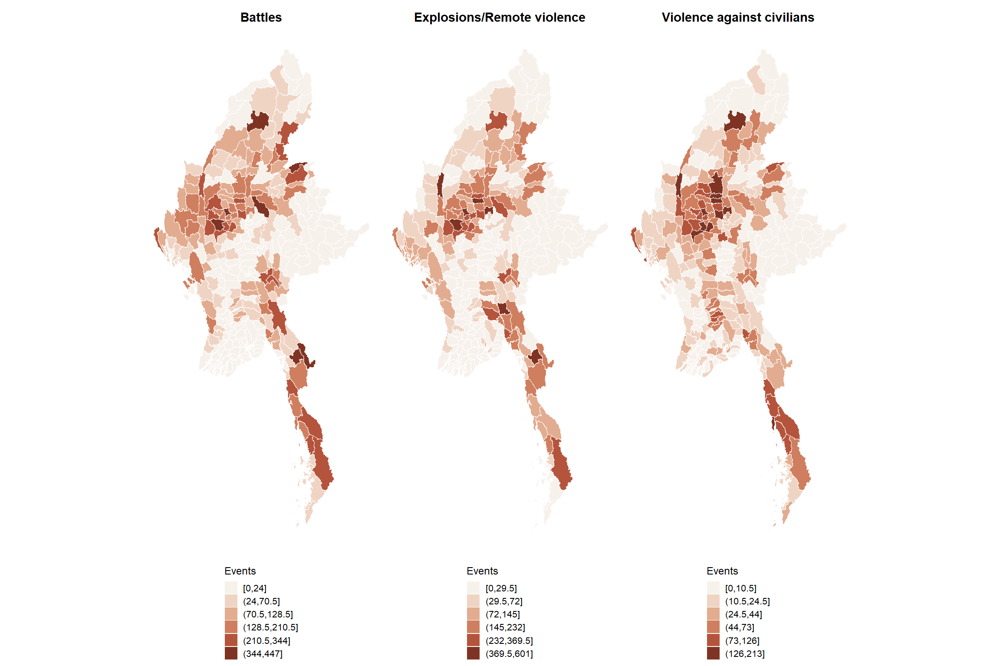
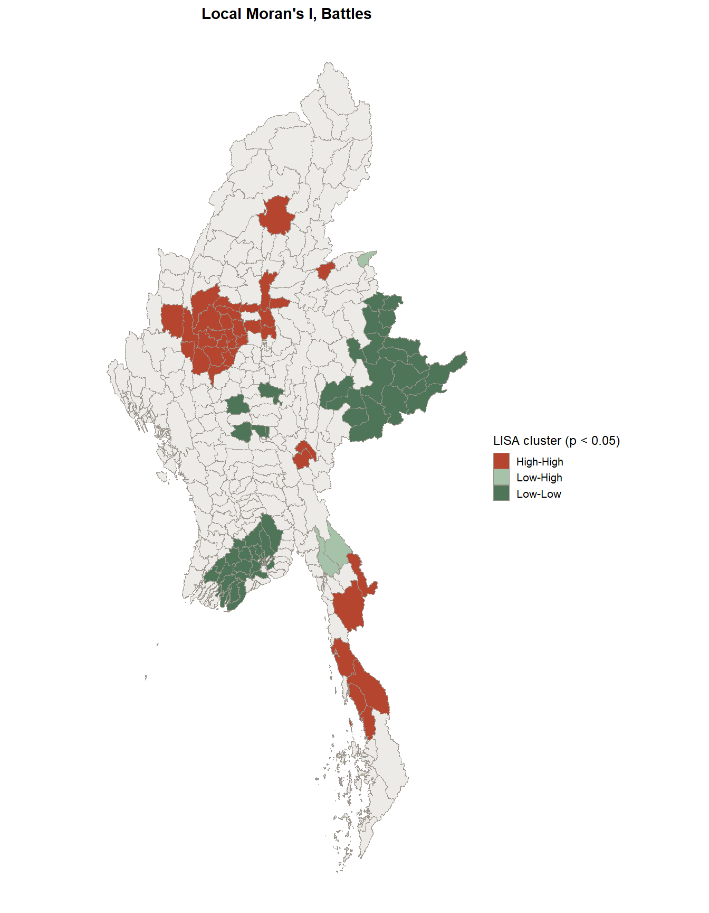
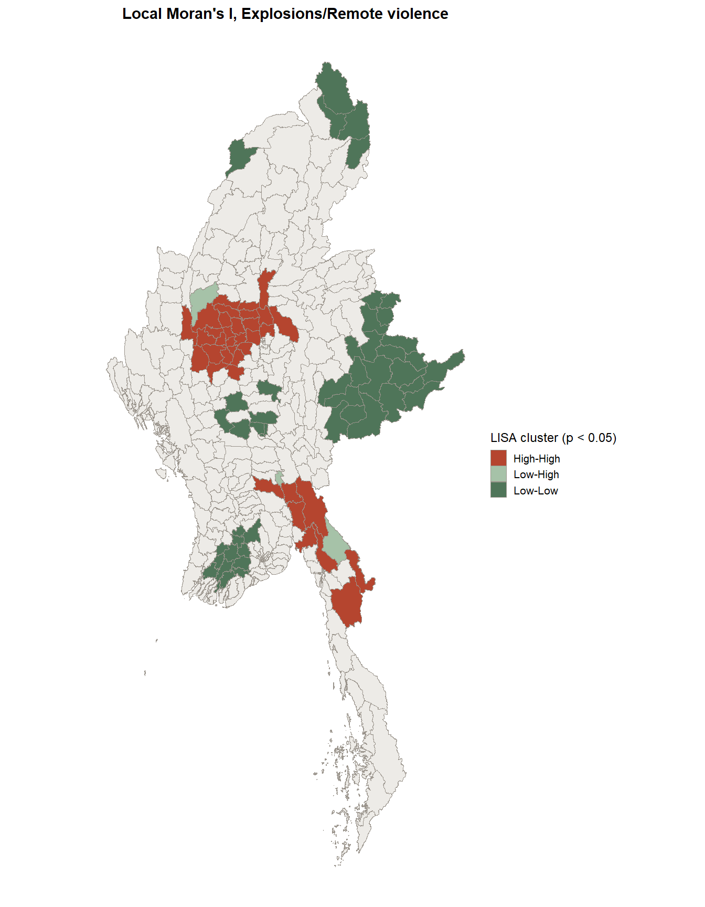
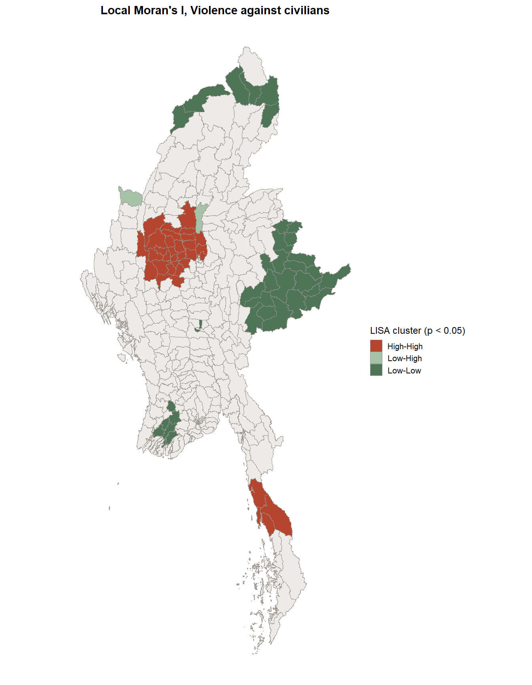
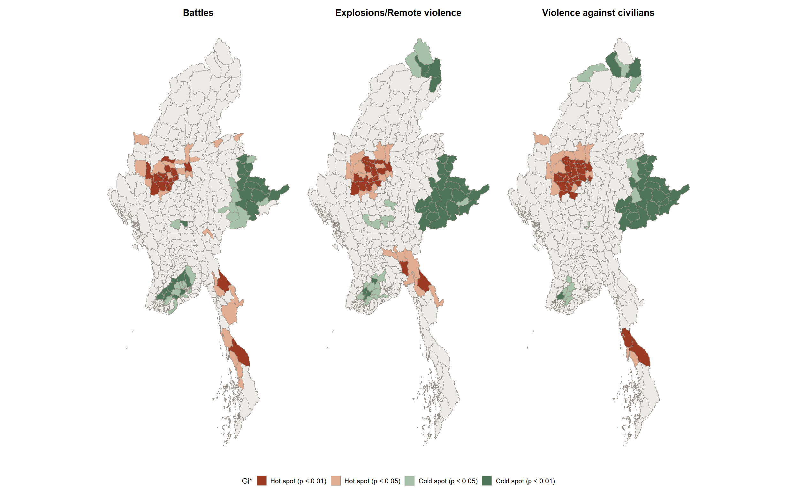
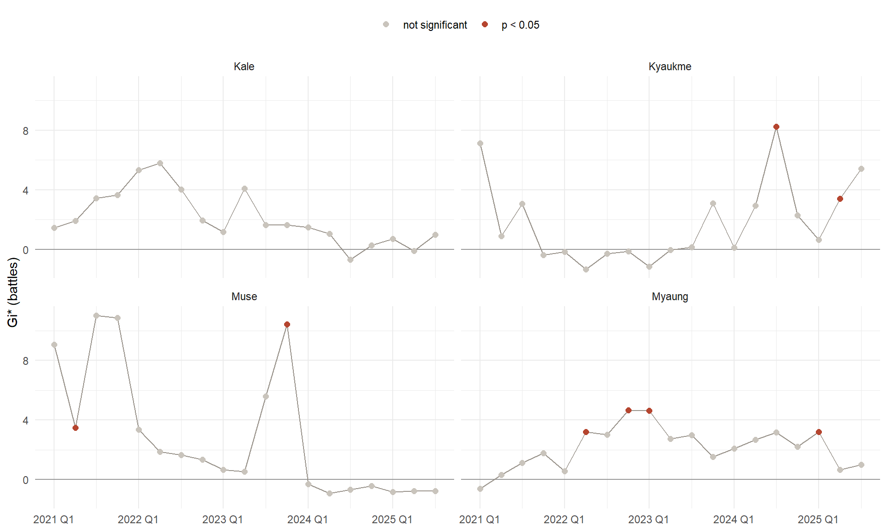
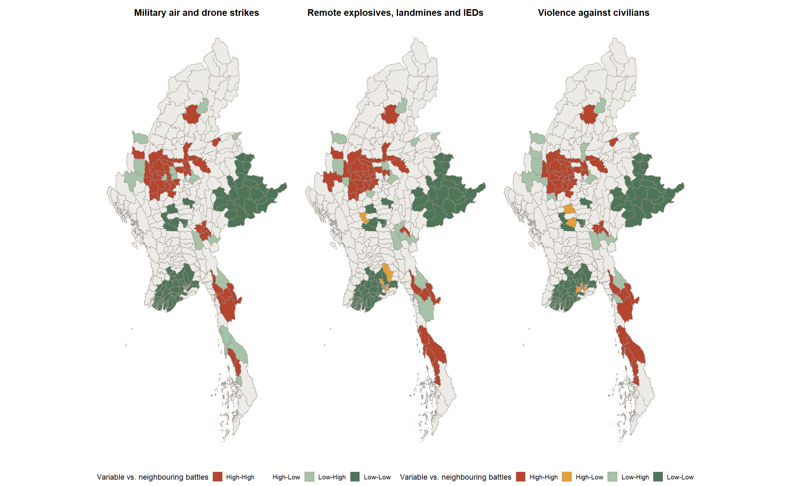
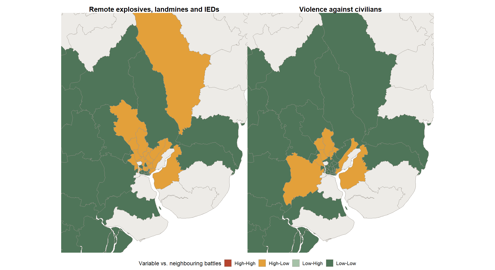

Code
pacman::p_load(sf, sfdep, spdep, tidyverse, lubridate, classInt,
patchwork, Kendall, plotly, knitr)Where and how armed conflict in Myanmar clusters and shifts, January 2021 to September 2025
Meng Tingyu
October 27, 2026
October 28, 2026
Myanmar’s military seized power on 1 February 2021. Street protests were met with arrests and shootings, and by the end of that year many protesters had moved to the forests and joined People’s Defence Forces or older ethnic armed organisations. Since then the country has broken into zones held by different groups, and the military relies more and more on air strikes and artillery to hold ground it can no longer patrol.
This exercise looks at that war at township level. I use the ACLED event data for Myanmar from 1 January 2021 to 30 September 2025 and the MIMU v9.4 township boundaries. The first part measures where conflict clusters across the whole period using Local Measures of Spatial Association (LMSA). The second part uses Emerging Hot Spot Analysis (EHSA) to see how those clusters change from quarter to quarter.
I set out to answer three questions.
The answers are meant to help people who plan humanitarian access and civilian protection work see which townships are under sustained pressure and which ones are newly exposed.
| Item | Description |
|---|---|
| Aspatial data | ACLED event data for Myanmar, 1 Jan 2021 to 30 Sep 2025, provided on eLearn (87,109 events, 31 fields) |
| Geospatial data | MIMU Myanmar Township Boundaries v9.4 (mmr_polbnda_adm3_250k_mimu_1), 330 townships, downloaded from MIMU GeoNode |
| Unit of analysis | Township (ADM3) |
| Time unit | Calendar quarter, 2021 Q1 to 2025 Q3 (19 quarters) |
| Analysis variables | Counts of Battles, Explosions/Remote violence and Violence against civilians |
| Projected CRS | WGS 84 / UTM zone 47N (EPSG:32647) |
I keep three event types and analyse them separately. Each reflects a different way the war is fought. Battles are armed clashes between organised groups. Explosions/Remote violence covers air and drone strikes, shelling and mines, where the attacker does not need to be close to the target. Violence against civilians covers deliberate attacks, abductions and sexual violence against unarmed people. Pooling them would hide the difference between a front line and a place where civilians are attacked without any fighting around them, and that difference matters for protection work.
ACLED’s terms of use do not allow the raw event file to be redistributed. The data/aspatial folder is listed in .gitignore, so the CSV is not pushed to GitHub. Anyone who wants to rerun this report should download the Myanmar file from eLearn or from the ACLED Data Export Tool and save it as data/aspatial/ACLED_Data_Myanmar_Jan2021-Sep2025.csv. The township and quarter counts I derive are aggregated and are saved in data/rds.
| Package | What I use it for |
|---|---|
| sf | Reading the shapefile, CRS transformation, spatial joins |
| sfdep | Spatial weights, Local Moran’s I, Gi*, the space-time cube and EHSA |
| spdep | card() to check neighbour counts after the island fix |
| tidyverse (ggplot2), patchwork | Data wrangling, maps drawn with geom_sf() and charts arranged side by side |
| lubridate | Quarters and years from event dates |
| classInt | Fisher natural breaks for the choropleth maps |
| Kendall | Mann-Kendall trend test |
| plotly | Interactive time series chart |
| knitr | Tables |
I also define one colour palette at the start so every map in the report uses the same hues for the same meaning. Terracotta stands for high or hot, sage stands for low or cold, and grey stands for not significant.
pal_seq <- c("#F7F1EC", "#EFD4C4", "#E2AC90", "#CF7F5F", "#B5543C", "#7F3423")
pal_lisa <- c("High-High" = "#B5452F", "High-Low" = "#E3A03A",
"Low-High" = "#A6C2A8", "Low-Low" = "#4F7559")
col_ns <- "#EDEBE7"
col_line <- "#9A948C"
var_labels <- c(battles = "Battles",
explosions = "Explosions/Remote violence",
vac = "Violence against civilians")
theme_map <- function() {
theme_void(base_size = 10) +
theme(plot.title = element_text(face = "bold", size = 11, hjust = 0.5),
legend.position = "bottom",
legend.direction = "vertical",
legend.title = element_text(size = 9),
legend.text = element_text(size = 8),
legend.key.size = unit(0.4, "cm"))
}
# grey base map with only the significant townships coloured
sig_map <- function(all_sf, sig_sf, fill_col, pal, title, legend_title,
drop = TRUE) {
ggplot() +
geom_sf(data = all_sf, fill = col_ns, colour = col_line, linewidth = 0.05) +
geom_sf(data = sig_sf, aes(fill = .data[[fill_col]]),
colour = col_line, linewidth = 0.05) +
scale_fill_manual(values = pal, drop = drop, name = legend_title) +
coord_sf(datum = NA) +
labs(title = title) +
theme_map()
}I draw the maps with ggplot2::geom_sf() so that every map shares one theme and one legend style, and I combine panels with patchwork. The helper sig_map() draws all townships in light grey and then colours only the significant ones, which is what the brief asks for in the LMSA and EHSA maps.
Rows: 330
Columns: 8
$ ST <chr> "Ayeyarwady", "Ayeyarwady", "Ayeyarwady", "Ayeyarwady", "Ayey…
$ ST_PCODE <chr> "MMR017", "MMR017", "MMR017", "MMR017", "MMR017", "MMR017", "…
$ DT <chr> "Hinthada", "Hinthada", "Hinthada", "Hinthada", "Hinthada", "…
$ DT_PCODE <chr> "MMR017D002", "MMR017D002", "MMR017D002", "MMR017D002", "MMR0…
$ TS <chr> "Hinthada", "Ingapu", "Kyangin", "Lemyethna", "Myanaung", "Za…
$ TS_PCODE <chr> "MMR017008", "MMR017013", "MMR017012", "MMR017010", "MMR01701…
$ TS_MMR <chr> "ဟင်္သာတ", "အင်္ဂပူ", "ကြံခင်း", "လေးမျက်နှာ", "မြန်အောင်", "ဇလွန်", "လပွတ္တာ", "…
$ PCode_V <dbl> 9.4, 9.4, 9.4, 9.4, 9.4, 9.4, 9.4, 9.4, 9.4, 9.4, 9.4, 9.4, 9…The file has 330 townships in WGS 84 and every row carries the version tag 9.4, so this is the boundary set the brief asks for. Before using it I ran four checks.
| check | result |
|---|---|
| CRS (EPSG) | 4326 |
| Invalid geometries | 0 |
| Unique TS_PCODE | 330 |
| Townships | 330 |
| Duplicated township names | Minhla, Htantabin |
| ST | DT | TS | TS_PCODE |
|---|---|---|---|
| Bago (East) | Taungoo | Htantabin | MMR007014 |
| Bago (West) | Thayarwady | Minhla | MMR008009 |
| Magway | Thayet | Minhla | MMR009013 |
| Yangon | Yangon (North) | Htantabin | MMR013006 |
The geometries are valid and every township has its own P-code. Two township names repeat though. There is a Minhla in Bago (West) and another in Magway, and a Htantabin in Bago (East) and another in Yangon. Any join on the TS name would silently attach the counts of one township to both. I therefore use TS_PCODE as the only key from here on.
I first tried a quick join by name while exploring, and Htantabin came back twice in my LISA table with the same values. The township P-code is the safe key. Sorting the boundary layer by TS_PCODE now also matters later, because emerging_hotspot_analysis() returns its results in sorted location order (see Section 9).
I project the layer to UTM zone 47N. Myanmar spans roughly 92°E to 101°E, so zone 47 (96°E to 102°E) covers the core of the country and the distortion at the western edge is small at this scale. A projected CRS in metres is needed for distance and area based steps such as nearest feature matching.
[1] 87109 31read_csv() parses event_date as a Date because the export uses the ISO format, so no date conversion is needed. I then profiled the fields that decide whether an event can be placed in a township and a quarter.
tibble(
check = c("Date range", "Duplicated event_id_cnty", "Missing coordinates",
"Rows with country other than Myanmar", "Missing admin3"),
result = c(paste(range(acled_raw$event_date), collapse = " to "),
sum(duplicated(acled_raw$event_id_cnty)),
sum(is.na(acled_raw$latitude) | is.na(acled_raw$longitude)),
sum(acled_raw$country != "Myanmar"),
sum(is.na(acled_raw$admin3)))
) |> kable()| check | result |
|---|---|
| Date range | 2021-01-01 to 2025-09-30 |
| Duplicated event_id_cnty | 0 |
| Missing coordinates | 0 |
| Rows with country other than Myanmar | 6 |
| Missing admin3 | 1118 |
| event_type | n |
|---|---|
| Explosions/Remote violence | 22925 |
| Battles | 21121 |
| Strategic developments | 17833 |
| Protests | 15203 |
| Violence against civilians | 9958 |
| Riots | 69 |
| country | admin1 == “North Indian Ocean” | n |
|---|---|---|
| Indian Ocean | TRUE | 6 |
| Myanmar | FALSE | 87103 |
The file covers exactly the study period and has no duplicated event IDs or missing coordinates. Three things needed a closer look.
The first is six rows coded to the North Indian Ocean. Reading their notes, they describe navies arresting Indian and Bangladeshi fishermen at sea. These are not part of Myanmar’s armed conflict and they would not fall inside any township, so I drop them.
The second is the mix of event types. About 38% of the rows are Protests or Strategic developments. Strategic developments include arrests, looting and recruitment news, and Protests are mostly peaceful. Neither is armed conflict, so I keep only the three political violence types described above.
The third is location precision. ACLED’s geo_precision is 1 when the exact place is known, 2 when the event is placed at a nearby town and 3 when only a larger area is known. A precision 3 event sits at the centre of a district or state, which would hand it to a township that may have nothing to do with it.
| event_type | geo_precision_1 | geo_precision_2 | geo_precision_3 |
|---|---|---|---|
| Battles | 8894 | 12175 | 52 |
| Explosions/Remote violence | 13819 | 9080 | 26 |
| Violence against civilians | 6878 | 3064 | 16 |
| location | latitude | longitude | n |
|---|---|---|---|
| Hpapun | 18.0650 | 97.4449 | 322 |
| Kawkareik | 16.5555 | 98.2400 | 288 |
| Monywa | 22.1086 | 95.1358 | 268 |
| Kyaukkyi | 18.3264 | 96.7695 | 267 |
| Myawaddy | 16.6891 | 98.5089 | 237 |
Only 93 political violence events have precision 3, so dropping them costs very little. Precision 2 is a different story. About 45% of the political violence events are placed on a town point, and the second table shows the effect. 322 events share the exact coordinates of Hpapun town and 268 share those of Monywa. I keep these events because the town usually sits inside the township where the event happened, but this stacking inflates the count of townships that contain a district town. I return to it in the limitations.
acled_pv <- acled_raw |>
filter(country == "Myanmar",
event_type %in% var_labels,
geo_precision < 3) |>
mutate(var = case_match(event_type,
"Battles" ~ "battles",
"Explosions/Remote violence" ~ "explosions",
"Violence against civilians" ~ "vac"),
year = year(event_date),
qtr = quarter(event_date, with_year = TRUE)) |>
select(event_id_cnty, event_date, year, qtr, time_precision,
event_type, sub_event_type, var, actor1, admin1, admin3,
location, latitude, longitude, geo_precision, fatalities)
acled_sf <- acled_pv |>
st_as_sf(coords = c("longitude", "latitude"), crs = 4326, remove = FALSE) |>
st_transform(32647)The coordinates are decimal degrees, so I declare them as EPSG:4326 first and only then transform to EPSG:32647. Setting the UTM code directly on degree values is a common mistake that silently places every point near the origin of the projection.
I assign each event to a township with a point in polygon join instead of ACLED’s admin3 field. The admin3 names follow ACLED’s own gazetteer and do not always match MIMU spellings, and 1,118 rows have no admin3 at all.
acled_ts <- st_join(acled_sf, select(mmr_ts, TS_PCODE, TS), join = st_intersects)
outside <- which(is.na(acled_ts$TS_PCODE))
acled_ts[outside, ] |>
st_drop_geometry() |>
select(admin1, admin3, location, geo_precision) |>
mutate(dist_to_nearest_km = as.numeric(
st_distance(acled_ts[outside, ],
mmr_ts[st_nearest_feature(acled_ts[outside, ], mmr_ts), ],
by_element = TRUE)) / 1000) |>
kable(digits = 2)| admin1 | admin3 | location | geo_precision | dist_to_nearest_km |
|---|---|---|---|---|
| Rakhine | Buthidaung | Wa Ra Kyun | 1 | 0.01 |
| Tanintharyi | Bokpyin | Ma Thay | 2 | 0.49 |
| Kayin | Myawaddy | Me Ka Lar | 2 | 0.26 |
| Kayin | Myawaddy | Me Ka Lar | 2 | 0.26 |
| Kayin | Myawaddy | Me Ka Lar | 2 | 0.26 |
| Tanintharyi | Kyunsu | Kawt Ka Nin | 1 | 0.49 |
| Rakhine | Buthidaung | Wa Ra Kyun | 2 | 0.01 |
| Rakhine | Pauktaw | Ku La Thein | 1 | 0.01 |
Eight events fall just outside every polygon. All of them are coastal places in Rakhine, Tanintharyi and Kayin, and the furthest is less than half a kilometre from land. The 1:250,000 boundary simply cuts off part of the shoreline, so I give these events to the nearest township.
As a cross check I compared the township from the spatial join with ACLED’s own admin3 label.
[1] 0.9901496| ACLED admin3 | MIMU township (spatial join) | Events |
|---|---|---|
| Hlaingtharya-East | Hlaingtharya (East) | 182 |
| Dagon Myothit-South | Dagon Myothit (South) | 128 |
| Dagon Myothit-North | Dagon Myothit (North) | 107 |
| Dagon Myothit-Seikkan | Dagon Myothit (Seikkan) | 49 |
| Dagon Myothit-East | Dagon Myothit (East) | 39 |
| Hlaingtharya-West | Hlaingtharya (West) | 12 |
| Lay Shi | Layshi | 5 |
| Pangsang | Pangsang (Panghkam) | 4 |
| Kawhmu | Twantay | 2 |
| Pekon | Pinlaung | 1 |
| Toungup | Ann | 1 |
99% of the labels agree. Most of the rest are spelling differences such as “Dagon Myothit-South” against “Dagon Myothit (South)”. Only four events land in a genuinely different township, which is what I expect near boundaries. This gives me confidence that the join is sound.
tibble(
step = c("Raw ACLED rows",
"Drop events at sea (North Indian Ocean)",
"Drop Protests, Riots and Strategic developments",
"Drop geo_precision 3",
"Events snapped to nearest township",
"Events used in the analysis"),
rows = c(nrow(acled_raw),
-sum(acled_raw$country != "Myanmar"),
-sum(acled_raw$country == "Myanmar" & !acled_raw$event_type %in% var_labels),
-sum(acled_raw$country == "Myanmar" & acled_raw$event_type %in% var_labels &
acled_raw$geo_precision == 3),
length(outside),
nrow(acled_ts))
) |> kable(format.args = list(big.mark = ","))| step | rows |
|---|---|
| Raw ACLED rows | 87,109 |
| Drop events at sea (North Indian Ocean) | -6 |
| Drop Protests, Riots and Strategic developments | -33,103 |
| Drop geo_precision 3 | -93 |
| Events snapped to nearest township | 8 |
| Events used in the analysis | 53,907 |
None of the cleaning steps changed more than a few hundred events, but each one would have caused a quiet error later. The events at sea would have broken the join, the duplicate names would have doubled two townships, and the precision 3 events would have built small false hot spots around district centres.
I count events by township and type, then join the counts back to all 330 polygons. Townships with no events must stay in the data as zeros. Dropping them would remove the very cold spots LISA is meant to find and would leave holes in the neighbour structure.
ts_counts <- acled_ts |>
st_drop_geometry() |>
count(TS_PCODE, var) |>
pivot_wider(names_from = var, values_from = n, values_fill = 0)
mmr_conflict <- mmr_ts |>
left_join(ts_counts, by = "TS_PCODE") |>
mutate(across(c(battles, explosions, vac), ~ replace_na(.x, 0L)))
mmr_conflict |>
st_drop_geometry() |>
select(battles, explosions, vac) |>
pivot_longer(everything(), names_to = "variable") |>
group_by(variable) |>
summarise(total = sum(value), zero_townships = sum(value == 0),
median = median(value), mean = round(mean(value), 1),
max = max(value)) |>
kable()| variable | total | zero_townships | median | mean | max |
|---|---|---|---|---|---|
| battles | 21069 | 27 | 20.0 | 63.8 | 447 |
| explosions | 22899 | 19 | 29.5 | 69.4 | 601 |
| vac | 9939 | 19 | 18.0 | 30.1 | 213 |
All three variables are strongly right skewed. The mean is two to three times the median and a handful of townships record several hundred events. Between 19 and 27 townships have no event of a given type at all.
ACLED records a time_precision of 2 or 3 for about 4% of the kept events, meaning the date is only known to the week or month. A monthly cube would also be very sparse. I compared the share of empty township and period cells under both options.
acled_ts |>
st_drop_geometry() |>
mutate(month = floor_date(event_date, "month")) |>
group_by(var) |>
summarise(empty_monthly = 1 - n_distinct(TS_PCODE, month) / (330 * 57),
empty_quarterly = 1 - n_distinct(TS_PCODE, qtr) / (330 * 19)) |>
mutate(across(starts_with("empty"), ~ scales::percent(.x, 0.1))) |>
kable()| var | empty_monthly | empty_quarterly |
|---|---|---|
| battles | 71.4% | 56.3% |
| explosions | 66.8% | 48.8% |
| vac | 73.8% | 52.5% |
At monthly resolution 67% to 74% of cells are empty, against 49% to 56% at quarterly resolution. I use quarters. Nineteen quarters is still enough for a Mann-Kendall trend test, and an event dated only to its month still falls in the correct quarter. The study period ends on 30 September 2025, so the last quarter is complete.
qtr_levels <- sort(unique(acled_ts$qtr))
conflict_qtr <- acled_ts |>
st_drop_geometry() |>
mutate(qid = match(qtr, qtr_levels)) |>
count(TS_PCODE, qid, var) |>
pivot_wider(names_from = var, values_from = n, values_fill = 0) |>
complete(TS_PCODE = mmr_ts$TS_PCODE, qid = seq_along(qtr_levels),
fill = list(battles = 0L, explosions = 0L, vac = 0L)) |>
arrange(TS_PCODE, qid)
dim(conflict_qtr)[1] 6270 5complete() fills every township and quarter combination that had no event with zeros. Without it the cube would be ragged and spacetime() would reject it. I index quarters as integers 1 to 19 because the cube needs a numeric or date time column, and keep qtr_levels to translate them back into labels for charts.
[1] TRUEThe cube has 330 locations by 19 quarters, 6,270 rows, and passes the validity check.
count_map <- function(v) {
brks <- classIntervals(mmr_conflict[[v]], n = 6, style = "fisher")$brks
mmr_conflict |>
mutate(cls = cut(.data[[v]], breaks = unique(brks), include.lowest = TRUE,
dig.lab = 4)) |>
ggplot() +
geom_sf(aes(fill = cls), colour = "white", linewidth = 0.05) +
scale_fill_manual(values = pal_seq, name = "Events") +
coord_sf(datum = NA) +
labs(title = var_labels[[v]]) +
theme_map()
}
count_map("battles") | count_map("explosions") | count_map("vac")
I used Fisher natural breaks because the counts are heavily skewed. Equal intervals would put almost every township in the lowest class.
Conflict is concentrated in a broad belt across the central Dry Zone, covering Sagaing, Magway and Mandalay, and in the borderlands of northern Shan, Kayin, Kayah and Tanintharyi. Sagaing alone accounts for 4,871 battles and 5,349 explosion events, more than any other region. The Ayeyarwady delta, southern and eastern Shan and Nay Pyi Taw stay pale on all three maps.
The three maps are not copies of each other. Battles are spread widely across the borderlands, with the darkest townships in Kachin, northern Shan and Kayin. Explosions/Remote violence also lights up Bago (East), where Kyaukkyi records 601 events, the highest of any township. Violence against civilians is darkest in the Dry Zone, around Monywa, Kale and Yesagyo, in Hpakant and along the Tanintharyi coast.
Raw counts favour large townships and townships that contain a district town, so this map shows the volume of events. It says nothing about risk per person or per square kilometre.
trend <- acled_ts |>
st_drop_geometry() |>
count(qtr, var) |>
mutate(quarter = paste0(floor(qtr), " Q", round((qtr %% 1) * 10)),
type = var_labels[var])
p_trend <- ggplot(trend, aes(x = quarter, y = n, colour = type, group = type)) +
geom_line(linewidth = 0.9) +
geom_point(size = 1.6) +
scale_colour_manual(values = c("#B5543C", "#E2AC90", "#4F7559")) +
labs(x = NULL, y = "Events per quarter", colour = NULL) +
theme_minimal(base_size = 11) +
theme(axis.text.x = element_text(angle = 45, hjust = 1),
legend.position = "top")
ggplotly(p_trend, tooltip = c("x", "y", "colour"))Battles and explosions rose quickly in 2021 as the resistance armed itself, levelled off through 2022 and early 2023, and peaked in 2023 Q4 with 1,649 battles and 1,923 explosion events. That quarter contains the start of Operation 1027 in northern Shan on 27 October 2023. After the peak battles fell back to about 1,100 a quarter in 2025, while explosions stayed higher than battles in every quarter from 2023 Q4 onwards. The military shifted toward strikes from a distance as it lost ground.
Violence against civilians follows a different path. It peaked in 2021 Q4 at 779 events, during the first crackdown on the resistance, and has drifted down to around 400 to 500 events a quarter since.
yearly <- acled_ts |>
st_drop_geometry() |>
count(TS_PCODE, year, var) |>
complete(TS_PCODE = mmr_ts$TS_PCODE, year = 2021:2025, var,
fill = list(n = 0L))
year_map <- function(v) {
mmr_ts |>
left_join(filter(yearly, var == v), by = "TS_PCODE") |>
mutate(year = if_else(year == 2025, "2025 (Jan to Sep)", as.character(year)),
cls = cut(n, breaks = c(-Inf, 0, 10, 25, 50, 100, Inf),
labels = c("0", "1 to 10", "11 to 25", "26 to 50",
"51 to 100", "Over 100"))) |>
ggplot() +
geom_sf(aes(fill = cls), colour = "white", linewidth = 0.03) +
scale_fill_manual(values = pal_seq, name = "Events", drop = FALSE) +
facet_wrap(~ year, nrow = 1) +
coord_sf(datum = NA) +
theme_map() +
theme(legend.position = "right",
strip.text = element_text(face = "bold", size = 10))
}I use the same fixed breaks for every year so the panels are comparable. Note that 2025 covers nine months only.
In 2021 the heaviest fighting was on the northern and eastern borders, in Muse and Kutkai in northern Shan, Momauk and Hpakant in Kachin and Demoso in Kayah. In 2022 and 2023 the weight moved to the Dry Zone, and Sagaing recorded about 1,500 battles in each year. In 2024 Rakhine jumped from 97 battles to 774 as the Arakan Army advanced through Maungdaw, Gwa and Ann. In the first nine months of 2025 Sagaing fell to 452 battles and the busiest townships were Nawnghkio in northern Shan, Kawkareik in Kayin and Kyaukpyu in Rakhine.
Explosions spread further and for longer. The number of townships with 25 or more explosion events grew every year from 33 in 2021 to 81 in 2024, while the same count for battles peaked at 80 in 2023. Bago (East) went from 60 explosion events in 2021 to 712 in 2024, most of them in Kyaukkyi. Yangon moved the other way, from over 500 a year in 2021 and 2022 to 65 in 2025.
Violence against civilians peaked in Sagaing in 2022 with 766 events and fell every year after, to 190 in 2025. Bago (West) is the exception, rising to more than 210 events a year in 2024 and 2025, mostly in Okpho and Minhla.
| Decision | Choice | Reason |
|---|---|---|
| Neighbours | Queen contiguity | Townships that share a border or a corner share roads, rivers and armed group territory |
| Island townships | Linked to the nearest township by centroid | Chaungzon, Munaung and Cocokyun have no land border, and LISA cannot be computed for a unit without neighbours |
| Weights | Row-standardised (style “W”) | Townships have between 1 and 11 neighbours, and row standardisation stops townships with many neighbours from dominating the lag |
| Gi* and EHSA weights | Same contiguity plus the township itself, row-standardised | Gi* must include the focal township. I avoid inverse distance weights here because sfdep gives the self link a weight of zero, which quietly turns Gi* back into Gi |
| Null model | Conditional permutation, 999 simulations for LMSA and 199 for EHSA | Counts are skewed and full of zeros, so the normal approximation is unreliable |
| Significance | p < 0.05, with a false discovery rate check | The brief asks for 0.05, and with 330 tests some false positives are expected |
| Seed | set.seed(1234) before each permutation test |
Makes the simulated p-values reproducible |
[1] "Chaungzon" "Munaung" "Cocokyun" centroids <- st_point_on_surface(st_geometry(mmr_conflict))
knn1 <- st_knn(centroids, k = 1)
for (i in island) {
j <- knn1[[i]]
nb_q[[i]] <- j
nb_q[[j]] <- sort(unique(c(nb_q[[j]], i)))
}
linked <- sapply(island, function(i) knn1[[i]])
link_km <- as.numeric(st_distance(centroids[island], centroids[linked],
by_element = TRUE)) / 1000
tibble(island_township = mmr_conflict$TS[island],
linked_to = mmr_conflict$TS[linked],
distance_km = round(link_km, 1)) |>
kable()| island_township | linked_to | distance_km |
|---|---|---|
| Chaungzon | Mawlamyine | 15.5 |
| Munaung | Ramree | 42.4 |
| Cocokyun | Ngapudaw | 185.4 |
Min. 1st Qu. Median Mean 3rd Qu. Max.
1.000 4.000 5.000 5.218 6.000 11.000 I add each island link in both directions so the neighbour list stays symmetric. Chaungzon is joined to Mawlamyine across a 15 km channel with a bridge, which is a real connection. Cocokyun sits 185 km offshore and records no events at all, so its link to Ngapudaw has no practical effect on the results. Every township now has between 1 and 11 neighbours, with a median of 5.
The class example builds Gi* weights with st_inverse_distance() on a neighbour list that includes the township itself. When I printed those weights the first value in every row was 0, because the distance from a township to itself is 0 and its inverse is undefined. The resulting statistic ignores the focal township, which is Gi and not Gi*. Row-standardised contiguity weights keep the self weight positive.
Before looking for local clusters I test whether conflict is spatially clustered at all.
| variable | moran_I | p_value |
|---|---|---|
| Battles | 0.475 | < 0.001 |
| Explosions/Remote violence | 0.454 | < 0.001 |
| Violence against civilians | 0.475 | < 0.001 |
All three variables have Moran’s I between 0.45 and 0.48 and none of the 1,000 simulated maps comes close. The null hypothesis of spatial randomness is rejected. Townships with many events tend to sit next to other townships with many events, so it makes sense to ask where those clusters are.
lisa <- map(names(var_labels), function(v) {
set.seed(1234)
local_moran(mmr_conflict[[v]], nb_q, wt_q, nsim = 999)
}) |> set_names(names(var_labels))
lisa_sf <- imap_dfr(lisa, function(res, v) {
mmr_conflict |>
select(ST, TS, TS_PCODE, value = all_of(v)) |>
mutate(ii = res$ii, p_ii_sim = res$p_ii_sim,
mean = as.character(res$mean), median = as.character(res$median),
variable = v)
})local_moran() returns several quadrant labels. I use the mean column, which compares each township and its neighbourhood with the national mean. Because the counts are skewed I also checked the median labels. They differ for at most four significant townships per variable, so the choice does not change the story.
| variable | significant | expected_by_chance | significant_after_FDR | mean_vs_median_differ |
|---|---|---|---|---|
| battles | 108 | 16 | 48 | 3 |
| explosions | 87 | 16 | 30 | 4 |
| vac | 75 | 16 | 43 | 2 |
With 330 tests at the 5% level about 16 townships would be flagged by chance alone. Each variable has far more significant townships than that. After a false discovery rate correction fewer townships survive, mostly in the cores of the High-High and Low-Low clusters. I map the uncorrected p < 0.05 results as the brief requires, and treat townships on the edge of a cluster with more caution.
lisa_map <- function(v) {
d <- filter(lisa_sf, variable == v)
sig <- d |>
filter(p_ii_sim < 0.05) |>
mutate(cluster = factor(mean, levels = names(pal_lisa)))
sig_map(d, sig, "cluster", pal_lisa,
paste("Local Moran's I,", var_labels[[v]]),
"LISA cluster (p < 0.05)") +
theme(legend.position = "right")
}
lisa_table <- function(v) {
lisa_sf |>
st_drop_geometry() |>
filter(variable == v, p_ii_sim < 0.05) |>
count(ST, mean) |>
pivot_wider(names_from = mean, values_from = n, values_fill = 0) |>
kable()
}| ST | Low-Low | High-High | Low-High |
|---|---|---|---|
| Ayeyarwady | 11 | 0 | 0 |
| Bago (East) | 1 | 0 | 0 |
| Chin | 0 | 1 | 0 |
| Kachin | 0 | 1 | 0 |
| Kayah | 0 | 2 | 0 |
| Kayin | 0 | 2 | 2 |
| Magway | 2 | 6 | 0 |
| Mandalay | 1 | 4 | 0 |
| Nay Pyi Taw | 2 | 0 | 0 |
| Sagaing | 0 | 15 | 0 |
| Shan (East) | 10 | 0 | 0 |
| Shan (North) | 5 | 1 | 1 |
| Shan (South) | 4 | 0 | 0 |
| Tanintharyi | 0 | 4 | 0 |
| Yangon | 33 | 0 | 0 |

There is one large High-High cluster for battles. It runs from Sagaing, which has 15 of the significant High-High townships, through Magway and Mandalay, and a second arm covers Kayah, Kayin and Tanintharyi. These are townships with many battles surrounded by neighbours with many battles, the main fronts of the war.
The Low-Low cluster covers Yangon, the Ayeyarwady delta, Nay Pyi Taw and eastern Shan. Yangon alone contributes 33 Low-Low townships because its townships are small and densely packed, so the count overstates how much land this cold cluster covers.
There are no significant High-Low outliers. The Low-High outliers are Hpa-An and Hlaingbwe in Kayin and Konkyan in northern Shan, places with relatively few battles next to heavy fighting. Hpa-An is the Kayin state capital and is held by the military, so a quieter capital ringed by contested countryside fits what is known about the area.
| ST | Low-Low | High-High | Low-High |
|---|---|---|---|
| Ayeyarwady | 11 | 0 | 0 |
| Bago (East) | 0 | 3 | 1 |
| Kachin | 4 | 0 | 0 |
| Kayin | 0 | 4 | 1 |
| Magway | 3 | 5 | 0 |
| Mandalay | 1 | 6 | 0 |
| Mon | 0 | 1 | 0 |
| Nay Pyi Taw | 4 | 0 | 0 |
| Sagaing | 1 | 16 | 1 |
| Shan (East) | 10 | 0 | 0 |
| Shan (North) | 5 | 1 | 0 |
| Shan (South) | 6 | 0 | 0 |
| Yangon | 3 | 0 | 0 |

The High-High cluster for explosions is concentrated in Sagaing, where 16 townships are significant, and spreads into Magway, Mandalay, Kayin and Bago (East). Compared with battles, the cluster has fewer townships in Chin, Kayah and Tanintharyi and more in Bago (East).
The Low-Low cluster again covers the delta, Nay Pyi Taw, eastern and southern Shan and parts of Kachin. Yangon now contributes only three Low-Low townships against 33 for battles. Many Yangon townships record dozens of explosion events, mostly small bombs and IEDs, so they are no longer low enough to form a cold cluster.
The three Low-High outliers are Hlaingbwe in Kayin, Mingin in Sagaing and Htantabin in Bago (East), each surrounded by neighbours with far heavier shelling and air strikes.
| ST | Low-Low | Low-High | High-High |
|---|---|---|---|
| Ayeyarwady | 6 | 0 | 0 |
| Chin | 0 | 1 | 0 |
| Kachin | 4 | 0 | 0 |
| Magway | 0 | 0 | 5 |
| Mandalay | 0 | 1 | 6 |
| Nay Pyi Taw | 2 | 0 | 0 |
| Sagaing | 2 | 0 | 18 |
| Shan (East) | 10 | 0 | 0 |
| Shan (North) | 5 | 0 | 0 |
| Shan (South) | 6 | 0 | 0 |
| Tanintharyi | 0 | 0 | 4 |
| Yangon | 5 | 0 | 0 |

Violence against civilians has the most compact High-High cluster. Eighteen of its 33 significant High-High townships are in Sagaing, with the rest in neighbouring Magway and Mandalay and four in Tanintharyi. This is the core of the Bamar resistance heartland, where the military has carried out village raids and burnings since 2021.
Unlike battles, there is no High-High cluster in the ethnic borderlands of Kayin, Kayah or northern Shan. Civilians there face shelling and air strikes, which are captured in the previous map, but fewer recorded direct attacks.
The Low-Low cluster sits in eastern and southern Shan, Kachin, the delta and parts of Yangon. The Low-High outliers are Tonzang in Chin and Thabeikkyin in Mandalay, at the edges of the Sagaing cluster.
Local Moran’s I tells me whether a township is similar to its neighbours. Gi* asks a narrower question, whether the township and its neighbours together hold a higher or lower share of events than expected. Gi* cannot flag outliers. Its single hot or cold reading is easier to communicate.
gstar_sf <- map_dfr(names(var_labels), function(v) {
set.seed(1234)
res <- local_gstar_perm(mmr_conflict[[v]], nb_self, wt_self, nsim = 999)
mmr_conflict |>
select(ST, TS, TS_PCODE) |>
mutate(gi_star = res$gi_star, p_sim = res$p_sim, variable = v)
}) |>
mutate(class = case_when(
p_sim < 0.01 & gi_star > 0 ~ "Hot spot (p < 0.01)",
p_sim < 0.05 & gi_star > 0 ~ "Hot spot (p < 0.05)",
p_sim < 0.05 & gi_star < 0 & p_sim >= 0.01 ~ "Cold spot (p < 0.05)",
p_sim < 0.01 & gi_star < 0 ~ "Cold spot (p < 0.01)",
TRUE ~ "Not significant"))
pal_gi <- c("Hot spot (p < 0.01)" = "#9C3A24",
"Hot spot (p < 0.05)" = "#E2AC90",
"Cold spot (p < 0.05)" = "#A6C2A8",
"Cold spot (p < 0.01)" = "#4F7559")
gi_map <- function(v) {
d <- filter(gstar_sf, variable == v)
sig <- d |>
filter(class != "Not significant") |>
mutate(class = factor(class, levels = names(pal_gi)))
sig_map(d, sig, "class", pal_gi, var_labels[[v]], "Gi*", drop = FALSE)
}(gi_map("battles") | gi_map("explosions") | gi_map("vac")) +
plot_layout(guides = "collect") &
theme(legend.position = "bottom", legend.direction = "horizontal")
gstar_sf |>
st_drop_geometry() |>
filter(class != "Not significant") |>
mutate(type = if_else(gi_star > 0, "hot", "cold")) |>
count(variable, type) |>
pivot_wider(names_from = type, values_from = n) |>
kable()| variable | cold | hot |
|---|---|---|
| battles | 63 | 38 |
| explosions | 48 | 38 |
| vac | 39 | 36 |

The Gi* maps confirm the LISA picture and make the contrast between the three types easier to see side by side. All three share a hot core in Sagaing and the adjoining parts of Magway and Mandalay, and in that core most townships are significant at the 1% level.
Beyond the core the hot spots diverge. Battles have extra hot spots in Kayin, Kayah, Chin and Tanintharyi. Explosions extend south into Bago (East) and Kayin. Violence against civilians stays almost entirely within the Dry Zone and Tanintharyi.
The cold spots line up with areas the military still controls firmly or where ceasefires hold, which are Yangon, the delta, Nay Pyi Taw and eastern Shan. Explosions and violence against civilians also have cold spots in the far north of Kachin. Yangon forms a strong cold spot for battles, with 36 cold townships, but only 10 Yangon townships are cold for explosions and 7 for violence against civilians. Few battles in the city does not mean few attacks on civilians there.
Comparing the three variables was more informative than any single map. One map of “conflict” would have shown the Dry Zone as the hot spot and Yangon as calm, and missed that Yangon’s townships record many bombings and attacks on civilians.
LMSA treats the whole period as one snapshot. EHSA asks whether each township’s hot or cold status is stable, growing or fading across the 19 quarters. It works in two steps. A Gi* value is computed for every township in every quarter, and then a Mann-Kendall test checks whether that series has a monotonic trend.
I first run the two steps by hand on battles so the logic is visible. I attach the neighbour list and weights to the geometry part of the cube and compute Gi* separately for each quarter.
conflict_nb <- conflict_cube |>
activate("geometry") |>
mutate(nb = nb_self, wt = wt_self, .before = 1) |>
set_nbs("nb") |>
set_wts("wt")
set.seed(1234)
gi_qtr <- conflict_nb |>
group_by(qid) |>
mutate(gi = local_gstar_perm(battles, nb, wt, nsim = 199)) |>
tidyr::unnest(gi) |>
ungroup() |>
select(TS_PCODE, qid, battles, gi_star, p_sim) |>
left_join(st_drop_geometry(select(mmr_conflict, TS_PCODE, TS, ST)),
by = "TS_PCODE")The .before = 1 argument puts the new columns in front of the geometry so set_nbs() can find them, and the geometry part of the cube is already sorted by TS_PCODE, so nb_self lines up with the right townships. I then pick four townships with different histories and plot their Gi* values.
example_ts <- c("Kyaukme", "Muse", "Myaung", "Kale")
gi_qtr |>
filter(TS %in% example_ts) |>
mutate(sig = if_else(p_sim < 0.05, "p < 0.05", "not significant"),
quarter = qtr_levels[qid]) |>
ggplot(aes(x = qid, y = gi_star)) +
geom_hline(yintercept = 0, colour = "grey60") +
geom_line(colour = "#9A948C") +
geom_point(aes(colour = sig), size = 2) +
scale_colour_manual(values = c("p < 0.05" = "#B5452F",
"not significant" = "#C9C4BC")) +
scale_x_continuous(breaks = c(1, 5, 9, 13, 17),
labels = c("2021 Q1", "2022 Q1", "2023 Q1", "2024 Q1", "2025 Q1")) +
facet_wrap(~ TS, ncol = 2) +
labs(x = NULL, y = "Gi* (battles)", colour = NULL) +
theme_minimal(base_size = 11) +
theme(legend.position = "top")
| Township | Kendall’s tau | p-value |
|---|---|---|
| Myaung | 0.158 | 0.363 |
| Kale | -0.497 | 0.003 |
| Muse | -0.661 | 0.000 |
| Kyaukme | 0.322 | 0.059 |
The four townships show why a trend test is needed on top of Gi*.
Muse, on the Chinese border, had high Gi* values in 2021, a spike above 10 in 2023 Q4 when Operation 1027 began, and negative values in every quarter since the Haigeng ceasefire of January 2024. Its tau is strongly negative and significant.
Kale in Sagaing peaked in the first half of 2022 and has cooled since, so it also has a significant negative tau even though it recorded 322 battles in total. Tau describes the direction of the series and says nothing about its level.
Kyaukme moves the other way. After a high first quarter in 2021, its Gi* hovered around zero from late 2021 to late 2023, then rose to its peak in 2024 Q3. The positive tau falls just short of significance in this quarter by quarter version.
Myaung has a positive Gi* in almost every quarter but no clear direction, so its tau is small and not significant. It shows that a township under steady pressure can produce no trend at all.
emerging_hotspot_analysis() repeats these steps for every township. It differs from my manual version in one way. With k = 1 each township’s neighbourhood also includes its neighbours in the previous quarter, so the Gi* values are spatio-temporal. I pass my own neighbour list and weights through nb_col and wt_col so the island fix and row standardisation carry over.
[1] TRUEI set include_gi = TRUE so the function also returns the spatio-temporal Gi* value and pseudo p-value for every township and quarter. The rows come out ordered by quarter and then by the geometry order, so I attach the township and quarter IDs in that order. I need these values for the check in the next callout.
Two defaults in emerging_hotspot_analysis() would have changed my results without any error. The first is threshold = 0.01, which sets the significance level for the quarterly Gi* values used in the classification. The brief asks for 0.05, so I set it explicitly. The second is ordering. The function splits its Gi* values by location ID, which sorts them alphabetically, but returns the location column in the order of the geometry. The two only line up if the geometry is sorted by the location ID, which is why I sorted mmr_ts by TS_PCODE at the start. The check above returns TRUE.
gi_st <- imap(ehsa_raw, function(res, v) {
attr(res, "gi_star") |>
as_tibble() |>
bind_cols(conflict_qtr |> arrange(qid, TS_PCODE) |> select(TS_PCODE, qid))
})
gi_share <- imap_dfr(gi_st, function(g, v) {
g |>
group_by(TS_PCODE) |>
summarise(share_hot = mean(gi_star > 0 & p_sim <= 0.05),
share_cold = mean(gi_star < 0 & p_sim <= 0.05),
last_sig = last(p_sim <= 0.05, order_by = qid),
.groups = "drop") |>
mutate(variable = v)
})
ehsa_raw |>
imap_dfr(~ as_tibble(.x) |> mutate(variable = .y)) |>
filter(classification == "intensifying hotspot") |>
left_join(gi_share, by = c("location" = "TS_PCODE", "variable")) |>
left_join(st_drop_geometry(select(mmr_conflict, TS_PCODE, TS, battles,
explosions, vac)),
by = c("location" = "TS_PCODE")) |>
mutate(events = case_when(variable == "battles" ~ battles,
variable == "explosions" ~ explosions,
TRUE ~ vac)) |>
select(variable, TS, events, share_hot, share_cold, tau, p_value) |>
kable(digits = 3)| variable | TS | events | share_hot | share_cold | tau | p_value |
|---|---|---|---|---|---|---|
| explosions | Khaunglanhpu | 2 | 0 | 0.947 | 0.427 | 0.012 |
| explosions | Nansang | 0 | 0 | 1.000 | 0.380 | 0.025 |
| explosions | Langkho | 0 | 0 | 1.000 | 0.380 | 0.025 |
| explosions | Mongpan | 0 | 0 | 0.947 | 0.345 | 0.042 |
| explosions | Mongyang | 1 | 0 | 0.947 | 0.357 | 0.036 |
| vac | Narphan | 0 | 0 | 0.947 | 0.415 | 0.014 |
| vac | Pangwaun | 0 | 0 | 0.947 | 0.345 | 0.042 |
| vac | Mongyang | 0 | 0 | 1.000 | 0.427 | 0.012 |
The first run labelled five townships as intensifying hot spots for explosions and three for violence against civilians, mostly in southern and eastern Shan and the Wa area. That surprised me, because the same area is a strong cold spot on every LMSA map. The table above shows why. These townships recorded almost no events, and their spatio-temporal Gi* is significantly cold in nearly every quarter and never significantly hot. sfdep’s rule for an intensifying hot spot counts the share of significant quarters without checking whether they are hot or cold, and it is tested before the cold spot rules. A township that is cold in 90% of quarters with a rising tau therefore passes as an intensifying hot spot. By the definition in the EHSA documentation these townships are diminishing cold spots, so I reclassify them with the function below and confirm that no intensifying hot spot is left without a 90% share of hot quarters.
fix_ehsa <- function(res, v) {
res |>
as_tibble() |>
left_join(filter(gi_share, variable == v), by = c("location" = "TS_PCODE")) |>
mutate(classification = case_when(
classification == "intensifying hotspot" & share_hot < 0.9 &
share_cold >= 0.9 & last_sig & tau > 0 & p_value <= 0.05 ~ "diminishing coldspot",
classification == "intensifying hotspot" & share_hot < 0.9 &
share_cold >= 0.9 & p_value > 0.05 ~ "persistent coldspot",
TRUE ~ classification)) |>
select(location, tau, p_value, classification, share_hot)
}
ehsa <- imap(ehsa_raw, fix_ehsa)
ehsa |>
map_lgl(~ any(.x$classification == "intensifying hotspot" & .x$share_hot < 0.9)) |>
any()[1] FALSEThe check returns FALSE, so every remaining intensifying hot spot is hot in at least 90% of quarters.
As a sanity check I compare the tau from EHSA with the tau from my manual quarterly Gi* for battles.
| correlation | same_direction |
|---|---|
| 0.973 | 0.973 |
The two sets of tau values have a correlation of 0.97 and share the same sign for 97% of townships. The differences come from the time lag neighbours in EHSA, which smooth each series a little.
The brief asks for maps showing only significant townships. I treat a township as significant when its Mann-Kendall p-value is below 0.05.
ehsa_levels <- c("new hotspot", "intensifying hotspot", "consecutive hotspot",
"persistent hotspot", "oscillating hotspot", "sporadic hotspot",
"diminishing hotspot", "historical hotspot",
"no pattern detected",
"historical coldspot", "diminishing coldspot", "sporadic coldspot",
"oscillating coldspot", "persistent coldspot",
"consecutive coldspot", "intensifying coldspot", "new coldspot")
pal_ehsa <- c("new hotspot" = "#E3A03A", "intensifying hotspot" = "#8E2F1C",
"consecutive hotspot" = "#B5452F", "persistent hotspot" = "#C8603F",
"oscillating hotspot" = "#DE8B6C", "sporadic hotspot" = "#F0C4AE",
"diminishing hotspot" = "#E9B78A", "historical hotspot" = "#F4DCC0",
"no pattern detected" = "#D8D2C8",
"historical coldspot" = "#DDE8DA", "diminishing coldspot" = "#C3D7C0",
"sporadic coldspot" = "#B5CDB4", "oscillating coldspot" = "#86A88A",
"persistent coldspot" = "#5F8566", "consecutive coldspot" = "#3F6650",
"intensifying coldspot" = "#2C4C3A", "new coldspot" = "#1D3328")
ehsa_sf <- imap_dfr(ehsa, function(res, v) {
mmr_conflict |>
select(ST, TS, TS_PCODE) |>
left_join(as_tibble(res), by = c("TS_PCODE" = "location")) |>
mutate(variable = v,
classification = str_replace(classification, "oscilating", "oscillating"))
})
ehsa_map <- function(v) {
d <- filter(ehsa_sf, variable == v)
sig <- d |> filter(p_value < 0.05)
lv <- intersect(ehsa_levels, unique(sig$classification))
sig <- mutate(sig, classification = factor(classification, levels = lv))
sig_map(d, sig, "classification", pal_ehsa[lv],
paste("EHSA,", var_labels[[v]]),
"EHSA class (p < 0.05)") +
theme(legend.position = "right")
}
ehsa_bar <- function(v) {
ehsa_sf |>
st_drop_geometry() |>
filter(variable == v) |>
mutate(sig = if_else(p_value < 0.05, "p < 0.05", "p >= 0.05")) |>
count(classification, sig) |>
mutate(classification = factor(classification, levels = rev(ehsa_levels))) |>
ggplot(aes(x = n, y = classification, fill = sig)) +
geom_col() +
scale_fill_manual(values = c("p < 0.05" = "#B5543C", "p >= 0.05" = "#D8D2C8")) +
labs(x = "Townships", y = NULL, fill = "Mann-Kendall") +
theme_minimal(base_size = 11) +
theme(legend.position = "top")
}The bar chart under each map shows all 330 townships, split by whether the Mann-Kendall test is significant. It shows what the significance filter removes.
| classification | battles | explosions | vac |
|---|---|---|---|
| new hotspot | 0 | 2 | 0 |
| consecutive hotspot | 3 | 5 | 4 |
| oscillating hotspot | 16 | 23 | 9 |
| sporadic hotspot | 16 | 9 | 20 |
| no pattern detected | 15 | 29 | 27 |
| diminishing coldspot | 0 | 5 | 3 |
| sporadic coldspot | 35 | 56 | 70 |
| oscillating coldspot | 7 | 5 | 4 |
| consecutive coldspot | 0 | 6 | 5 |
Persistent cold spots are defined as townships that are significantly cold in at least 90% of quarters with no significant trend. Because they have no trend, their Mann-Kendall p-value is above 0.05 by definition and they disappear from the filtered maps. The bar charts show 39 persistent cold spots for battles, 18 for explosions and 14 for violence against civilians. No township qualifies as a persistent hot spot for any variable. The war moves too much for any township to stay hot in 90% of quarters.
After the correction no township is an intensifying hot spot for any variable. Mogaung and Hpakant in Kachin are new hot spots for explosions, significantly hot only in the final quarter, 2025 Q3. Hpakant recorded 56 explosion events in that quarter, its highest in the study period, together with 48 and 50 battles in 2025 Q2 and Q3. Mogaung itself recorded a single explosion event in 2025 Q3. It is classed as a new hot spot because Gi* counts its neighbour Hpakant, which shows how the statistic flags a neighbourhood rather than a single township.
The reclassified townships, Khaunglanhpu in Kachin, Nansang, Langkho and Mongpan in southern Shan, Mongyang in eastern Shan and Narphan and Pangwaun in the Wa area, are now diminishing cold spots. Their own counts stayed at zero or one event almost every quarter. For a neighbourhood of zeros, Gi* depends only on how unevenly events are spread across the country. The coefficient of variation of quarterly explosion counts across townships rose from about 1.6 in 2021 and 2022 to about 2.4 in 2025, as events concentrated in fewer townships, and a neighbourhood with no events looks less unusual against that background. The diminishing trend therefore reflects a change in the national distribution. No new violence has reached these townships.
A consecutive hot spot has an unbroken run of significant hot quarters at the end of the series and was never hot before that run. For battles there are three, Mogoke in Mandalay and Kyaukme and Nawnghkio in northern Shan. All three sit on the road from Mandalay to Lashio, and Kyaukme and Nawnghkio were contested after the second phase of Operation 1027 in mid 2024. Mogoke and Kyaukme are also consecutive hot spots for explosions, together with Hpapun in Kayin and Shwegyin and Kyaukkyi in Bago (East).
For violence against civilians the consecutive hot spots are Taungtha, Kyaukpadaung and Mahlaing in Mandalay and Yenangyaung in Magway. These are southern Dry Zone townships close to the military’s core areas around Meiktila and Nay Pyi Taw, which suggests attacks on civilians spreading south from the Sagaing heartland.
Oscillating hot spots are hot in the latest quarter but were significantly cold at some earlier point. This is the largest hot category, with 16 townships for battles, 23 for explosions and 9 for violence against civilians, and their mean tau is between 0.53 and 0.66. In practice these are townships that started cold and turned hot.
For battles they form two groups. One is around Mandalay city, covering Pyinoolwin, Madaya, Singu, Thabeikkyin, Kyaukse, Taungtha and Ngazun. The other is in southern Tanintharyi and on Ramree island and the Kyaukpyu coast in Rakhine, where the Arakan Army advanced in 2024. The explosions group adds Dawei, Launglon, Thayetchaung, Bago (East), Pakokku and Nyaung-U. The pattern is fighting moving toward the military’s strongholds around Mandalay and the coast.
Sporadic hot spots switch on and off and have never been significantly cold. For battles there are 16, and their mean tau is negative at minus 0.38. They include Kale, Kalewa, Mingin, Katha and Kani in Sagaing, Demoso, Hpasawng and Mese in Kayah, Hakha in Chin and Gangaw and Tilin in Magway. These are places of heavy fighting in 2021 and 2022 that have quieted since, because the resistance took control of large rural areas and front lines moved elsewhere. For violence against civilians most of the 20 sporadic hot spots are in Sagaing and Mandalay, including the five townships of Mandalay city.
For battles, the seven oscillating cold spots are Muse, Namhkan, Kutkai, Kunlong and Laukkaing in northern Shan and Kanpetlet and Paletwa in Chin. Their tau averages minus 0.46. These townships were hot during Operation 1027 and are now significantly cold. In northern Shan this follows the ceasefires brokered by China between the military and the MNDAA and TNLA. In Paletwa it follows the Arakan Army’s capture of the township in early 2024.
Consecutive cold spots for explosions and violence against civilians are in Yangon, such as Kyauktada, Thongwa, Seikgyikanaungto, Sanchaung, Dagon and Thanlyin, and in the delta around Pyapon and Bogale. Yangon was a site of urban bombings and arrests in 2021 and 2022 and has become significantly cold in recent quarters.
This is the largest category, with 35 townships for battles, 56 for explosions and 70 for violence against civilians. They cover Yangon, the delta, Bago and southern Magway, which are areas the military still holds. Each has at least one significantly cold quarter but has never been significantly hot. I read these as places where violence stays low with occasional incidents. They are not guaranteed safe zones.
The LMSA maps told me the Dry Zone is the centre of the war. EHSA showed that the centre is not where change is happening. Most Sagaing townships drop out of the EHSA maps because they have been hot for so long that their Gi* series has no significant trend. The growth is in the ring around Mandalay, the Mandalay to Lashio road, Hpakant in Kachin and the Rakhine and Tanintharyi coasts.
The Low-Low clusters for battles cover Yangon, the delta and Bago, and it would be easy to read them as safe. Yet Yangon recorded 1,460 explosion events and 765 attacks on civilians. Univariate LISA and EHSA compare a township only with its neighbours on the same variable, so they cannot show violence that happens where there is little fighting around it.
I use a bivariate Local Moran’s I to compare each township’s level of one type of violence with the level of battles in its neighbourhood. A High-Low result marks a township with heavy violence surrounded by little fighting. That is violence away from the front line, and it calls for a different protection response from violence on the front line.
The bivariate statistic for township i is the standardised value of variable x at i multiplied by the spatial lag of the standardised battle count y around i. Significance comes from permuting the neighbours of i. I run it for three x variables.
Air/drone strike sub-event with actor Military Forces of Myanmar (2021-). This tests whether strikes follow the front or reach beyond it.The neighbourhood is the same row-standardised queen contiguity used in Section 8, without the township itself, so the comparison is always against the surrounding battle level.
bv_inputs <- acled_ts |>
st_drop_geometry() |>
mutate(bv_var = case_when(
sub_event_type == "Air/drone strike" &
actor1 == "Military Forces of Myanmar (2021-)" ~ "air",
sub_event_type == "Remote explosive/landmine/IED" ~ "ied",
var == "vac" ~ "vac",
TRUE ~ NA_character_)) |>
filter(!is.na(bv_var)) |>
count(TS_PCODE, bv_var) |>
pivot_wider(names_from = bv_var, values_from = n, values_fill = 0)
mmr_bv <- mmr_conflict |>
select(ST, TS, TS_PCODE, battles) |>
left_join(bv_inputs, by = "TS_PCODE") |>
mutate(across(c(air, ied, vac), ~ replace_na(.x, 0L)))
bv_labels <- c(air = "Military air and drone strikes",
ied = "Remote explosives, landmines and IEDs",
vac = "Violence against civilians")
mmr_bv |>
st_drop_geometry() |>
summarise(across(c(battles, air, ied, vac), sum)) |>
kable(format.args = list(big.mark = ","))| battles | air | ied | vac |
|---|---|---|---|
| 21,069 | 5,648 | 7,630 | 9,939 |
bv_sf <- imap_dfr(bv_labels, function(lbl, v) {
set.seed(1234)
res <- local_moran_bv(mmr_bv[[v]], mmr_bv$battles, nb_q, wt_q, nsim = 999)
zx <- as.numeric(scale(mmr_bv[[v]]))
lzy <- st_lag(as.numeric(scale(mmr_bv$battles)), nb_q, wt_q)
mmr_bv |>
select(ST, TS, TS_PCODE, battles, x = all_of(v)) |>
mutate(Ib = res$Ib, p_sim = res$p_sim, variable = v,
quadrant = case_when(zx > 0 & lzy > 0 ~ "High-High",
zx > 0 & lzy <= 0 ~ "High-Low",
zx <= 0 & lzy > 0 ~ "Low-High",
TRUE ~ "Low-Low"))
})
bv_sf |>
st_drop_geometry() |>
filter(p_sim < 0.05) |>
count(variable, quadrant) |>
pivot_wider(names_from = quadrant, values_from = n, values_fill = 0) |>
mutate(variable = bv_labels[variable]) |>
kable()| variable | High-High | Low-High | Low-Low | High-Low |
|---|---|---|---|---|
| Military air and drone strikes | 40 | 16 | 86 | 0 |
| Remote explosives, landmines and IEDs | 40 | 16 | 66 | 20 |
| Violence against civilians | 41 | 15 | 75 | 11 |
local_moran_bv() returns the statistic and a pseudo p-value but no quadrant label, so I build the quadrant myself from the sign of the standardised x and the sign of the lagged standardised battles.
bv_map <- function(v) {
d <- filter(bv_sf, variable == v)
sig <- d |>
filter(p_sim < 0.05) |>
mutate(quadrant = factor(quadrant, levels = names(pal_lisa)))
sig_map(d, sig, "quadrant", pal_lisa, bv_labels[[v]],
"Variable vs. neighbouring battles", drop = FALSE)
}
(bv_map("air") | bv_map("ied") | bv_map("vac")) +
plot_layout(guides = "collect") &
theme(legend.position = "bottom", legend.direction = "horizontal")
The Yangon townships are too small to read at national scale, so I zoom in on Yangon Region for the two variables with High-Low results.
ygn_box <- st_bbox(filter(mmr_conflict, ST == "Yangon", TS != "Cocokyun"))
bv_zoom <- function(v) {
bv_map(v) +
coord_sf(xlim = ygn_box[c("xmin", "xmax")],
ylim = ygn_box[c("ymin", "ymax")], datum = NA)
}
(bv_zoom("ied") | bv_zoom("vac")) +
plot_layout(guides = "collect") &
theme(legend.position = "bottom", legend.direction = "horizontal")
bv_sf |>
st_drop_geometry() |>
filter(p_sim < 0.05, quadrant == "High-Low") |>
mutate(neighbour_battles = round(st_lag(mmr_bv$battles, nb_q, wt_q)[
match(TS_PCODE, mmr_bv$TS_PCODE)], 1),
variable = bv_labels[variable]) |>
select(variable, ST, TS, x, battles, neighbour_battles) |>
arrange(variable, desc(x)) |>
kable(col.names = c("Variable", "Region", "Township", "Events (x)",
"Own battles", "Mean neighbour battles"))| Variable | Region | Township | Events (x) | Own battles | Mean neighbour battles |
|---|---|---|---|---|---|
| Remote explosives, landmines and IEDs | Yangon | Hlaingtharya (East) | 103 | 10 | 5.0 |
| Remote explosives, landmines and IEDs | Yangon | North Okkalapa | 83 | 8 | 5.2 |
| Remote explosives, landmines and IEDs | Yangon | Insein | 78 | 5 | 6.0 |
| Remote explosives, landmines and IEDs | Yangon | Mingaladon | 75 | 10 | 5.2 |
| Remote explosives, landmines and IEDs | Yangon | Mayangone | 64 | 4 | 5.7 |
| Remote explosives, landmines and IEDs | Yangon | Dagon Myothit (North) | 62 | 8 | 4.8 |
| Remote explosives, landmines and IEDs | Yangon | Dagon Myothit (South) | 60 | 13 | 4.2 |
| Remote explosives, landmines and IEDs | Yangon | Shwepyithar | 50 | 6 | 4.2 |
| Remote explosives, landmines and IEDs | Yangon | Thaketa | 49 | 10 | 4.2 |
| Remote explosives, landmines and IEDs | Yangon | South Okkalapa | 46 | 3 | 3.2 |
| Remote explosives, landmines and IEDs | Yangon | Thingangyun | 40 | 1 | 5.1 |
| Remote explosives, landmines and IEDs | Yangon | Bahan | 36 | 2 | 2.1 |
| Remote explosives, landmines and IEDs | Yangon | Tamwe | 35 | 1 | 1.0 |
| Remote explosives, landmines and IEDs | Yangon | Sanchaung | 34 | 3 | 2.4 |
| Remote explosives, landmines and IEDs | Yangon | Thanlyin | 31 | 12 | 4.0 |
| Remote explosives, landmines and IEDs | Yangon | Kyeemyindaing | 30 | 2 | 5.7 |
| Remote explosives, landmines and IEDs | Yangon | Dagon Myothit (East) | 29 | 0 | 8.2 |
| Remote explosives, landmines and IEDs | Bago (East) | Bago | 28 | 11 | 12.9 |
| Remote explosives, landmines and IEDs | Yangon | Hmawbi | 26 | 4 | 5.4 |
| Remote explosives, landmines and IEDs | Magway | Magway | 24 | 5 | 20.1 |
| Violence against civilians | Magway | Natmauk | 59 | 44 | 11.4 |
| Violence against civilians | Yangon | Insein | 56 | 5 | 6.0 |
| Violence against civilians | Yangon | Hlaingtharya (East) | 54 | 10 | 5.0 |
| Violence against civilians | Magway | Taungdwingyi | 51 | 7 | 6.2 |
| Violence against civilians | Yangon | Dagon Myothit (South) | 46 | 13 | 4.2 |
| Violence against civilians | Yangon | Shwepyithar | 35 | 6 | 4.2 |
| Violence against civilians | Yangon | North Okkalapa | 33 | 8 | 5.2 |
| Violence against civilians | Yangon | Thaketa | 32 | 10 | 4.2 |
| Violence against civilians | Yangon | Thanlyin | 32 | 12 | 4.0 |
| Violence against civilians | Yangon | Twantay | 32 | 13 | 3.4 |
| Violence against civilians | Yangon | Mingaladon | 31 | 10 | 5.2 |
Military air strikes stay with the fighting. There is not a single significant High-Low township for air and drone strikes. Most of the 40 significant High-High townships sit inside the battle clusters of Sagaing, Magway, Mandalay and Kayin found in the LMSA. The Low-High townships, such as Dawei, Matupi and Hakha, have heavy fighting around them but relatively few recorded strikes. At township scale the military’s air campaign concentrates where it is fighting, and no township stands out as a target of strikes far from the front.
Bombs and attacks on civilians do not. IEDs have 20 significant High-Low townships and 18 of them are in Yangon, including Hlaingtharya (East) with 103 IED events, North Okkalapa with 83 and Insein with 78, each surrounded by townships averaging only a few battles. Bago and Magway towns complete the list. Violence against civilians has 11 High-Low townships, nine in Yangon and two in Magway, Taungdwingyi and Natmauk.
These are the townships the univariate maps called Low-Low or cold. The bivariate result shows them as places where civilians face bombings, targeted killings and arrests without an active front line nearby. Most of this violence is urban guerrilla attacks by resistance cells and reprisals by the military and allied militias such as Pyu Saw Htee.
The analysis assumes battle counts are a fair proxy for where the front line is. A township can be contested without frequent recorded battles, for example under siege. The bivariate statistic measures co-location only, so a High-High result does not prove that strikes were a response to battles. ACLED attributes some drone strikes to the military when the actor is uncertain, and in remote areas air strikes may be under-reported. Finally, the Yangon results are partly a product of its very small townships. A single urban bombing campaign shows up across several neighbouring units, which raises their count compared with large rural townships.
The executive summary redraws the key maps from these saved objects, so it does not need to rerun the permutation tests.
I drop the geometry before saving because the township polygons are already stored once in mmr_conflict.rds. The slides join them back by TS_PCODE.
Where conflict clusters. All three types of political violence are clustered, with Moran’s I between 0.45 and 0.48. The core hot spot for all of them is Sagaing and the adjoining parts of Magway and Mandalay. Battles also cluster in the ethnic borderlands of Kayin, Kayah, Chin and Tanintharyi, while violence against civilians is confined to the Dry Zone.
How conflict moves. Conflict peaked nationally in 2023 Q4 and has since shifted from ground battles toward strikes from a distance. EHSA shows the areas of growth have moved away from the Sagaing core. Fighting is growing around Mandalay city, along the Mandalay to Lashio corridor and on the Rakhine and Tanintharyi coasts, while explosions are new hot spots in Kachin’s Hpakant and Mogaung. After correcting a classification error in sfdep, no township qualifies as an intensifying hot spot. The townships on the Chinese border in northern Shan, where Operation 1027 began, have become oscillating cold spots after the ceasefires.
What the core methods miss. The bivariate analysis shows that cold and Low-Low results for battles do not mean low risk for civilians. Yangon and some Magway towns carry concentrated bombings and attacks on civilians with no front line nearby.
The three methods answer different questions and I would not rely on one alone. LMSA identifies the long-run burden, EHSA identifies change, and the bivariate test identifies what kind of violence a township faces.
The Sagaing, Magway and Mandalay cluster has the largest burden of all three types of violence and has been hot for close to five years. Humanitarian access and protection resources there need to be planned over several years.
Townships classed as new, consecutive and oscillating hot spots are where violence is arriving. Hpakant and Mogaung in Kachin, the ring around Mandalay, the Mandalay to Lashio road and the Rakhine and Tanintharyi coasts are the places where early warning, contingency stocks and civilian evacuation planning would be most timely.
Northern Shan’s shift to oscillating cold spots shows that local ceasefires can lower violence quickly. These townships oscillated, so the gains are fragile and need monitoring.
Protection work in Yangon and other military-held towns should focus on targeted bombings, killings and arrests, which need different responses, such as legal aid, documentation and safe reporting channels, from the front line responses needed in Sagaing.
ACLED depends on media and partner reports. Coverage is likely weaker in remote areas with internet shutdowns, such as parts of Chin, Sagaing and Rakhine, so some cold spots may reflect missing reports. Fatality figures are conservative and I did not analyse them.
About 45% of the events are placed at a town point (geo_precision 2). This piles events into townships that contain district towns, such as Hpapun and Monywa, and spreads them less evenly than reality.
The results depend on the township scale, which is the modifiable areal unit problem. Yangon’s 45 small townships and the large rural townships of Kachin and Shan are treated as equal units, and counts are not adjusted for area or population. The 2014 census figures are out of date after mass displacement, so I chose not to compute per capita rates.
Queen contiguity ignores terrain and rivers. Two townships separated by the Chin hills count as neighbours just like two adjacent Yangon wards.
I applied a 0.05 threshold to 330 tests per variable. The FDR check shows the cores of the clusters are robust, but individual townships on cluster edges may be false positives.
EHSA uses a 90% rule and a single Mann-Kendall test over 19 quarters. A township that changed direction mid-period, such as a peak in 2023, can return a weak tau and fall into a sporadic or no pattern class even when its history is dramatic.
The project folder for this exercise is laid out as follows.
Take-home_Ex/Take-home_Ex02/
├── Take-home_Ex02.qmd
└── data/
├── aspatial/ # ACLED CSV, not pushed to GitHub
├── geospatial/ # MIMU v9.4 township shapefile
└── rds/ # derived counts and saved results for the slidesThe permutation tests use set.seed(1234) before each call, so rerunning the document gives the same p-values. The session details are below.
R version 4.5.3 (2026-03-11 ucrt)
Platform: x86_64-w64-mingw32/x64
Running under: Windows 11 x64 (build 26200)
Matrix products: default
LAPACK version 3.12.1
locale:
[1] LC_COLLATE=Chinese (Simplified)_China.utf8
[2] LC_CTYPE=Chinese (Simplified)_China.utf8
[3] LC_MONETARY=Chinese (Simplified)_China.utf8
[4] LC_NUMERIC=C
[5] LC_TIME=Chinese (Simplified)_China.utf8
time zone: Asia/Shanghai
tzcode source: internal
attached base packages:
[1] stats graphics grDevices utils datasets methods base
other attached packages:
[1] knitr_1.51 plotly_4.12.0 Kendall_2.2.2 patchwork_1.3.2
[5] classInt_0.4-11 lubridate_1.9.5 forcats_1.0.1 stringr_1.6.0
[9] dplyr_1.2.1 purrr_1.2.2 readr_2.2.0 tidyr_1.3.2
[13] tibble_3.3.1 ggplot2_4.0.2 tidyverse_2.0.0 spdep_1.4-2
[17] spData_2.3.5 sfdep_0.2.5 sf_1.1-1
loaded via a namespace (and not attached):
[1] tidyselect_1.2.1 viridisLite_0.4.3 farver_2.1.2
[4] S7_0.2.1-1 fastmap_1.2.0 lazyeval_0.2.3
[7] TH.data_1.1-5 pacman_0.5.1 digest_0.6.39
[10] timechange_0.4.0 lifecycle_1.0.5 LearnBayes_2.15.2
[13] survival_3.8-6 dbscan_1.2.6 magrittr_2.0.5
[16] compiler_4.5.3 rlang_1.2.0 tools_4.5.3
[19] igraph_2.3.1 yaml_2.3.12 data.table_1.18.2.1
[22] labeling_0.4.3 htmlwidgets_1.6.4 bit_4.6.0
[25] sp_2.2-1 RColorBrewer_1.1-3 multcomp_1.4-32
[28] KernSmooth_2.23-26 withr_3.0.2 grid_4.5.3
[31] e1071_1.7-17 MASS_7.3-65 scales_1.4.0
[34] mvtnorm_1.4-1 cli_3.6.6 rmarkdown_2.31
[37] crayon_1.5.3 generics_0.1.4 otel_0.2.0
[40] rstudioapi_0.18.0 httr_1.4.8 tzdb_0.5.0
[43] DBI_1.3.0 proxy_0.4-29 splines_4.5.3
[46] spatialreg_1.4-3 parallel_4.5.3 s2_1.1.11
[49] marginaleffects_1.0.0 vctrs_0.7.3 sandwich_3.1-3
[52] boot_1.3-32 Matrix_1.7-4 jsonlite_2.0.0
[55] hms_1.1.4 bit64_4.6.0-1 crosstalk_1.2.2
[58] units_1.0-1 glue_1.8.1 codetools_0.2-20
[61] stringi_1.8.7 gtable_0.3.6 deldir_2.0-4
[64] pillar_1.11.1 htmltools_0.5.9 R6_2.6.1
[67] wk_0.9.5 vroom_1.7.1 evaluate_1.0.5
[70] lattice_0.22-9 backports_1.5.1 class_7.3-23
[73] Rcpp_1.1.1-1.1 nlme_3.1-168 coda_0.19-4.1
[76] xfun_0.57 zoo_1.8-15 pkgconfig_2.0.3 ---
title: "Take-home Exercise 2"
subtitle: "Where and how armed conflict in Myanmar clusters and shifts, January 2021 to September 2025"
author: "Meng Tingyu"
date: "October 27, 2026"
date-modified: "last-modified"
format:
html:
toc: true
toc-depth: 3
number-sections: true
code-fold: true
code-tools: true
fig-align: center
execute:
echo: true
eval: true
warning: false
message: false
freeze: true
---
# Introduction and Study Context
Myanmar's military seized power on 1 February 2021. Street protests were met with arrests and shootings, and by the end of that year many protesters had moved to the forests and joined People's Defence Forces or older ethnic armed organisations. Since then the country has broken into zones held by different groups, and the military relies more and more on air strikes and artillery to hold ground it can no longer patrol.
This exercise looks at that war at township level. I use the ACLED event data for Myanmar from 1 January 2021 to 30 September 2025 and the MIMU v9.4 township boundaries. The first part measures where conflict clusters across the whole period using Local Measures of Spatial Association (LMSA). The second part uses Emerging Hot Spot Analysis (EHSA) to see how those clusters change from quarter to quarter.
## Research questions and objectives
I set out to answer three questions.
1. Which townships form statistically significant hot spots, cold spots and spatial outliers of armed conflict, and do the three types of political violence cluster in the same places?
2. How have these clusters changed over the 19 quarters of the study period, and which townships are getting worse, getting better or flipping between states?
3. Where does violence happen away from active fighting? This last question is my value-added analysis in @sec-bonus.
The answers are meant to help people who plan humanitarian access and civilian protection work see which townships are under sustained pressure and which ones are newly exposed.
# Data and Study Design
| Item | Description |
|------------------------|------------------------------------------------|
| Aspatial data | ACLED event data for Myanmar, 1 Jan 2021 to 30 Sep 2025, provided on eLearn (87,109 events, 31 fields) |
| Geospatial data | MIMU Myanmar Township Boundaries v9.4 (`mmr_polbnda_adm3_250k_mimu_1`), 330 townships, downloaded from MIMU GeoNode |
| Unit of analysis | Township (ADM3) |
| Time unit | Calendar quarter, 2021 Q1 to 2025 Q3 (19 quarters) |
| Analysis variables | Counts of Battles, Explosions/Remote violence and Violence against civilians |
| Projected CRS | WGS 84 / UTM zone 47N (EPSG:32647) |
: Study design {tbl-colwidths="[25,75]"}
I keep three event types and analyse them separately. Each reflects a different way the war is fought. **Battles** are armed clashes between organised groups. **Explosions/Remote violence** covers air and drone strikes, shelling and mines, where the attacker does not need to be close to the target. **Violence against civilians** covers deliberate attacks, abductions and sexual violence against unarmed people. Pooling them would hide the difference between a front line and a place where civilians are attacked without any fighting around them, and that difference matters for protection work.
::: {.callout-note title="Data licensing"}
ACLED's terms of use do not allow the raw event file to be redistributed. The `data/aspatial` folder is listed in `.gitignore`, so the CSV is not pushed to GitHub. Anyone who wants to rerun this report should download the Myanmar file from eLearn or from the ACLED Data Export Tool and save it as `data/aspatial/ACLED_Data_Myanmar_Jan2021-Sep2025.csv`. The township and quarter counts I derive are aggregated and are saved in `data/rds`.
:::
# Setting up the Analytical Environment
```{r}
#| label: setup
pacman::p_load(sf, sfdep, spdep, tidyverse, lubridate, classInt,
patchwork, Kendall, plotly, knitr)
```
| Package | What I use it for |
|-----------------|-------------------------------------------------------|
| **sf** | Reading the shapefile, CRS transformation, spatial joins |
| **sfdep** | Spatial weights, Local Moran's I, Gi*, the space-time cube and EHSA |
| **spdep** | `card()` to check neighbour counts after the island fix |
| **tidyverse** (ggplot2), **patchwork** | Data wrangling, maps drawn with `geom_sf()` and charts arranged side by side |
| **lubridate** | Quarters and years from event dates |
| **classInt** | Fisher natural breaks for the choropleth maps |
| **Kendall** | Mann-Kendall trend test |
| **plotly** | Interactive time series chart |
| **knitr** | Tables |
I also define one colour palette at the start so every map in the report uses the same hues for the same meaning. Terracotta stands for high or hot, sage stands for low or cold, and grey stands for not significant.
```{r}
#| label: palette
pal_seq <- c("#F7F1EC", "#EFD4C4", "#E2AC90", "#CF7F5F", "#B5543C", "#7F3423")
pal_lisa <- c("High-High" = "#B5452F", "High-Low" = "#E3A03A",
"Low-High" = "#A6C2A8", "Low-Low" = "#4F7559")
col_ns <- "#EDEBE7"
col_line <- "#9A948C"
var_labels <- c(battles = "Battles",
explosions = "Explosions/Remote violence",
vac = "Violence against civilians")
theme_map <- function() {
theme_void(base_size = 10) +
theme(plot.title = element_text(face = "bold", size = 11, hjust = 0.5),
legend.position = "bottom",
legend.direction = "vertical",
legend.title = element_text(size = 9),
legend.text = element_text(size = 8),
legend.key.size = unit(0.4, "cm"))
}
# grey base map with only the significant townships coloured
sig_map <- function(all_sf, sig_sf, fill_col, pal, title, legend_title,
drop = TRUE) {
ggplot() +
geom_sf(data = all_sf, fill = col_ns, colour = col_line, linewidth = 0.05) +
geom_sf(data = sig_sf, aes(fill = .data[[fill_col]]),
colour = col_line, linewidth = 0.05) +
scale_fill_manual(values = pal, drop = drop, name = legend_title) +
coord_sf(datum = NA) +
labs(title = title) +
theme_map()
}
```
I draw the maps with `ggplot2::geom_sf()` so that every map shares one theme and one legend style, and I combine panels with **patchwork**. The helper `sig_map()` draws all townships in light grey and then colours only the significant ones, which is what the brief asks for in the LMSA and EHSA maps.
# Data Import and Quality Assessment
## Township boundaries
```{r}
#| label: import-mimu
mmr_ts <- st_read(dsn = "data/geospatial",
layer = "mmr_polbnda_adm3_250k_mimu_1",
quiet = TRUE)
glimpse(st_drop_geometry(mmr_ts))
```
The file has 330 townships in WGS 84 and every row carries the version tag 9.4, so this is the boundary set the brief asks for. Before using it I ran four checks.
```{r}
#| label: check-mimu
tibble(
check = c("CRS (EPSG)", "Invalid geometries", "Unique TS_PCODE",
"Townships", "Duplicated township names"),
result = c(st_crs(mmr_ts)$epsg,
sum(!st_is_valid(mmr_ts)),
n_distinct(mmr_ts$TS_PCODE),
nrow(mmr_ts),
paste(mmr_ts$TS[duplicated(mmr_ts$TS)], collapse = ", "))
) |> kable()
mmr_ts |>
st_drop_geometry() |>
filter(TS %in% c("Minhla", "Htantabin")) |>
select(ST, DT, TS, TS_PCODE) |>
kable()
```
The geometries are valid and every township has its own P-code. Two township names repeat though. There is a Minhla in Bago (West) and another in Magway, and a Htantabin in Bago (East) and another in Yangon. Any join on the `TS` name would silently attach the counts of one township to both. I therefore use `TS_PCODE` as the only key from here on.
::: {.callout-warning title="Land mine 1, joining on township names"}
I first tried a quick join by name while exploring, and Htantabin came back twice in my LISA table with the same values. The township P-code is the safe key. Sorting the boundary layer by `TS_PCODE` now also matters later, because `emerging_hotspot_analysis()` returns its results in sorted location order (see @sec-ehsa).
:::
I project the layer to UTM zone 47N. Myanmar spans roughly 92°E to 101°E, so zone 47 (96°E to 102°E) covers the core of the country and the distortion at the western edge is small at this scale. A projected CRS in metres is needed for distance and area based steps such as nearest feature matching.
```{r}
#| label: project-mimu
mmr_ts <- mmr_ts |>
st_transform(32647) |>
select(ST, ST_PCODE, DT, TS, TS_PCODE) |>
arrange(TS_PCODE)
```
## ACLED event data
```{r}
#| label: import-acled
acled_raw <- read_csv("data/aspatial/ACLED_Data_Myanmar_Jan2021-Sep2025.csv",
show_col_types = FALSE)
dim(acled_raw)
```
`read_csv()` parses `event_date` as a `Date` because the export uses the ISO format, so no date conversion is needed. I then profiled the fields that decide whether an event can be placed in a township and a quarter.
```{r}
#| label: profile-acled
tibble(
check = c("Date range", "Duplicated event_id_cnty", "Missing coordinates",
"Rows with country other than Myanmar", "Missing admin3"),
result = c(paste(range(acled_raw$event_date), collapse = " to "),
sum(duplicated(acled_raw$event_id_cnty)),
sum(is.na(acled_raw$latitude) | is.na(acled_raw$longitude)),
sum(acled_raw$country != "Myanmar"),
sum(is.na(acled_raw$admin3)))
) |> kable()
acled_raw |> count(event_type, sort = TRUE) |> kable()
acled_raw |> count(country, admin1 == "North Indian Ocean") |> kable()
```
The file covers exactly the study period and has no duplicated event IDs or missing coordinates. Three things needed a closer look.
The first is six rows coded to the North Indian Ocean. Reading their notes, they describe navies arresting Indian and Bangladeshi fishermen at sea. These are not part of Myanmar's armed conflict and they would not fall inside any township, so I drop them.
The second is the mix of event types. About 38% of the rows are Protests or Strategic developments. Strategic developments include arrests, looting and recruitment news, and Protests are mostly peaceful. Neither is armed conflict, so I keep only the three political violence types described above.
The third is location precision. ACLED's `geo_precision` is 1 when the exact place is known, 2 when the event is placed at a nearby town and 3 when only a larger area is known. A precision 3 event sits at the centre of a district or state, which would hand it to a township that may have nothing to do with it.
```{r}
#| label: precision-tables
acled_raw |>
filter(event_type %in% var_labels) |>
count(event_type, geo_precision) |>
pivot_wider(names_from = geo_precision, values_from = n,
names_prefix = "geo_precision_") |>
kable()
acled_raw |>
filter(event_type %in% var_labels, geo_precision == 2) |>
count(location, latitude, longitude, sort = TRUE) |>
head(5) |>
kable()
```
Only 93 political violence events have precision 3, so dropping them costs very little. Precision 2 is a different story. About 45% of the political violence events are placed on a town point, and the second table shows the effect. 322 events share the exact coordinates of Hpapun town and 268 share those of Monywa. I keep these events because the town usually sits inside the township where the event happened, but this stacking inflates the count of townships that contain a district town. I return to it in the limitations.
## Cleaning and converting to sf
```{r}
#| label: clean-acled
acled_pv <- acled_raw |>
filter(country == "Myanmar",
event_type %in% var_labels,
geo_precision < 3) |>
mutate(var = case_match(event_type,
"Battles" ~ "battles",
"Explosions/Remote violence" ~ "explosions",
"Violence against civilians" ~ "vac"),
year = year(event_date),
qtr = quarter(event_date, with_year = TRUE)) |>
select(event_id_cnty, event_date, year, qtr, time_precision,
event_type, sub_event_type, var, actor1, admin1, admin3,
location, latitude, longitude, geo_precision, fatalities)
acled_sf <- acled_pv |>
st_as_sf(coords = c("longitude", "latitude"), crs = 4326, remove = FALSE) |>
st_transform(32647)
```
The coordinates are decimal degrees, so I declare them as EPSG:4326 first and only then transform to EPSG:32647. Setting the UTM code directly on degree values is a common mistake that silently places every point near the origin of the projection.
## Spatial join to townships
I assign each event to a township with a point in polygon join instead of ACLED's `admin3` field. The `admin3` names follow ACLED's own gazetteer and do not always match MIMU spellings, and 1,118 rows have no `admin3` at all.
```{r}
#| label: spatial-join
acled_ts <- st_join(acled_sf, select(mmr_ts, TS_PCODE, TS), join = st_intersects)
outside <- which(is.na(acled_ts$TS_PCODE))
acled_ts[outside, ] |>
st_drop_geometry() |>
select(admin1, admin3, location, geo_precision) |>
mutate(dist_to_nearest_km = as.numeric(
st_distance(acled_ts[outside, ],
mmr_ts[st_nearest_feature(acled_ts[outside, ], mmr_ts), ],
by_element = TRUE)) / 1000) |>
kable(digits = 2)
```
Eight events fall just outside every polygon. All of them are coastal places in Rakhine, Tanintharyi and Kayin, and the furthest is less than half a kilometre from land. The 1:250,000 boundary simply cuts off part of the shoreline, so I give these events to the nearest township.
```{r}
#| label: fix-outside
nearest <- st_nearest_feature(acled_ts[outside, ], mmr_ts)
acled_ts$TS_PCODE[outside] <- mmr_ts$TS_PCODE[nearest]
acled_ts$TS[outside] <- mmr_ts$TS[nearest]
```
As a cross check I compared the township from the spatial join with ACLED's own `admin3` label.
```{r}
#| label: name-check
name_cmp <- acled_ts |>
st_drop_geometry() |>
filter(!is.na(admin3))
mean(name_cmp$admin3 == name_cmp$TS)
name_cmp |>
filter(admin3 != TS) |>
count(admin3, TS, sort = TRUE) |>
kable(col.names = c("ACLED admin3", "MIMU township (spatial join)", "Events"))
```
99% of the labels agree. Most of the rest are spelling differences such as "Dagon Myothit-South" against "Dagon Myothit (South)". Only four events land in a genuinely different township, which is what I expect near boundaries. This gives me confidence that the join is sound.
```{r}
#| label: cleaning-log
tibble(
step = c("Raw ACLED rows",
"Drop events at sea (North Indian Ocean)",
"Drop Protests, Riots and Strategic developments",
"Drop geo_precision 3",
"Events snapped to nearest township",
"Events used in the analysis"),
rows = c(nrow(acled_raw),
-sum(acled_raw$country != "Myanmar"),
-sum(acled_raw$country == "Myanmar" & !acled_raw$event_type %in% var_labels),
-sum(acled_raw$country == "Myanmar" & acled_raw$event_type %in% var_labels &
acled_raw$geo_precision == 3),
length(outside),
nrow(acled_ts))
) |> kable(format.args = list(big.mark = ","))
```
::: {.callout-tip title="My takeaway"}
None of the cleaning steps changed more than a few hundred events, but each one would have caused a quiet error later. The events at sea would have broken the join, the duplicate names would have doubled two townships, and the precision 3 events would have built small false hot spots around district centres.
:::
# Building the Analytical Data
## Township totals
I count events by township and type, then join the counts back to all 330 polygons. Townships with no events must stay in the data as zeros. Dropping them would remove the very cold spots LISA is meant to find and would leave holes in the neighbour structure.
```{r}
#| label: township-totals
ts_counts <- acled_ts |>
st_drop_geometry() |>
count(TS_PCODE, var) |>
pivot_wider(names_from = var, values_from = n, values_fill = 0)
mmr_conflict <- mmr_ts |>
left_join(ts_counts, by = "TS_PCODE") |>
mutate(across(c(battles, explosions, vac), ~ replace_na(.x, 0L)))
mmr_conflict |>
st_drop_geometry() |>
select(battles, explosions, vac) |>
pivot_longer(everything(), names_to = "variable") |>
group_by(variable) |>
summarise(total = sum(value), zero_townships = sum(value == 0),
median = median(value), mean = round(mean(value), 1),
max = max(value)) |>
kable()
```
All three variables are strongly right skewed. The mean is two to three times the median and a handful of townships record several hundred events. Between 19 and 27 townships have no event of a given type at all.
## Choosing the time unit
ACLED records a `time_precision` of 2 or 3 for about 4% of the kept events, meaning the date is only known to the week or month. A monthly cube would also be very sparse. I compared the share of empty township and period cells under both options.
```{r}
#| label: sparsity
acled_ts |>
st_drop_geometry() |>
mutate(month = floor_date(event_date, "month")) |>
group_by(var) |>
summarise(empty_monthly = 1 - n_distinct(TS_PCODE, month) / (330 * 57),
empty_quarterly = 1 - n_distinct(TS_PCODE, qtr) / (330 * 19)) |>
mutate(across(starts_with("empty"), ~ scales::percent(.x, 0.1))) |>
kable()
```
At monthly resolution 67% to 74% of cells are empty, against 49% to 56% at quarterly resolution. I use quarters. Nineteen quarters is still enough for a Mann-Kendall trend test, and an event dated only to its month still falls in the correct quarter. The study period ends on 30 September 2025, so the last quarter is complete.
## Space-time cube
```{r}
#| label: cube-data
qtr_levels <- sort(unique(acled_ts$qtr))
conflict_qtr <- acled_ts |>
st_drop_geometry() |>
mutate(qid = match(qtr, qtr_levels)) |>
count(TS_PCODE, qid, var) |>
pivot_wider(names_from = var, values_from = n, values_fill = 0) |>
complete(TS_PCODE = mmr_ts$TS_PCODE, qid = seq_along(qtr_levels),
fill = list(battles = 0L, explosions = 0L, vac = 0L)) |>
arrange(TS_PCODE, qid)
dim(conflict_qtr)
```
`complete()` fills every township and quarter combination that had no event with zeros. Without it the cube would be ragged and `spacetime()` would reject it. I index quarters as integers 1 to 19 because the cube needs a numeric or date time column, and keep `qtr_levels` to translate them back into labels for charts.
```{r}
#| label: cube
conflict_cube <- spacetime(conflict_qtr, select(mmr_conflict, TS_PCODE, TS, ST),
.loc_col = "TS_PCODE",
.time_col = "qid")
is_spacetime_cube(conflict_cube)
```
The cube has 330 locations by 19 quarters, 6,270 rows, and passes the validity check.
```{r}
#| label: save-rds
write_rds(mmr_conflict, "data/rds/mmr_conflict.rds")
write_rds(conflict_qtr, "data/rds/conflict_qtr.rds")
```
# Geovisualising the Distribution of Conflict
## Where conflict happened, 2021 to 2025
```{r}
#| label: fig-totals
#| fig-cap: "Total events by township, January 2021 to September 2025"
#| fig-width: 12
#| fig-height: 8
count_map <- function(v) {
brks <- classIntervals(mmr_conflict[[v]], n = 6, style = "fisher")$brks
mmr_conflict |>
mutate(cls = cut(.data[[v]], breaks = unique(brks), include.lowest = TRUE,
dig.lab = 4)) |>
ggplot() +
geom_sf(aes(fill = cls), colour = "white", linewidth = 0.05) +
scale_fill_manual(values = pal_seq, name = "Events") +
coord_sf(datum = NA) +
labs(title = var_labels[[v]]) +
theme_map()
}
count_map("battles") | count_map("explosions") | count_map("vac")
```
I used Fisher natural breaks because the counts are heavily skewed. Equal intervals would put almost every township in the lowest class.
Conflict is concentrated in a broad belt across the central Dry Zone, covering Sagaing, Magway and Mandalay, and in the borderlands of northern Shan, Kayin, Kayah and Tanintharyi. Sagaing alone accounts for 4,871 battles and 5,349 explosion events, more than any other region. The Ayeyarwady delta, southern and eastern Shan and Nay Pyi Taw stay pale on all three maps.
The three maps are not copies of each other. Battles are spread widely across the borderlands, with the darkest townships in Kachin, northern Shan and Kayin. Explosions/Remote violence also lights up Bago (East), where Kyaukkyi records 601 events, the highest of any township. Violence against civilians is darkest in the Dry Zone, around Monywa, Kale and Yesagyo, in Hpakant and along the Tanintharyi coast.
Raw counts favour large townships and townships that contain a district town, so this map shows the volume of events. It says nothing about risk per person or per square kilometre.
## How conflict changed over time
```{r}
#| label: fig-trend
#| fig-cap: "Quarterly number of events by type"
trend <- acled_ts |>
st_drop_geometry() |>
count(qtr, var) |>
mutate(quarter = paste0(floor(qtr), " Q", round((qtr %% 1) * 10)),
type = var_labels[var])
p_trend <- ggplot(trend, aes(x = quarter, y = n, colour = type, group = type)) +
geom_line(linewidth = 0.9) +
geom_point(size = 1.6) +
scale_colour_manual(values = c("#B5543C", "#E2AC90", "#4F7559")) +
labs(x = NULL, y = "Events per quarter", colour = NULL) +
theme_minimal(base_size = 11) +
theme(axis.text.x = element_text(angle = 45, hjust = 1),
legend.position = "top")
ggplotly(p_trend, tooltip = c("x", "y", "colour"))
```
Battles and explosions rose quickly in 2021 as the resistance armed itself, levelled off through 2022 and early 2023, and peaked in 2023 Q4 with 1,649 battles and 1,923 explosion events. That quarter contains the start of Operation 1027 in northern Shan on 27 October 2023. After the peak battles fell back to about 1,100 a quarter in 2025, while explosions stayed higher than battles in every quarter from 2023 Q4 onwards. The military shifted toward strikes from a distance as it lost ground.
Violence against civilians follows a different path. It peaked in 2021 Q4 at 779 events, during the first crackdown on the resistance, and has drifted down to around 400 to 500 events a quarter since.
## Year by year maps
```{r}
#| label: yearly-data
yearly <- acled_ts |>
st_drop_geometry() |>
count(TS_PCODE, year, var) |>
complete(TS_PCODE = mmr_ts$TS_PCODE, year = 2021:2025, var,
fill = list(n = 0L))
year_map <- function(v) {
mmr_ts |>
left_join(filter(yearly, var == v), by = "TS_PCODE") |>
mutate(year = if_else(year == 2025, "2025 (Jan to Sep)", as.character(year)),
cls = cut(n, breaks = c(-Inf, 0, 10, 25, 50, 100, Inf),
labels = c("0", "1 to 10", "11 to 25", "26 to 50",
"51 to 100", "Over 100"))) |>
ggplot() +
geom_sf(aes(fill = cls), colour = "white", linewidth = 0.03) +
scale_fill_manual(values = pal_seq, name = "Events", drop = FALSE) +
facet_wrap(~ year, nrow = 1) +
coord_sf(datum = NA) +
theme_map() +
theme(legend.position = "right",
strip.text = element_text(face = "bold", size = 10))
}
```
I use the same fixed breaks for every year so the panels are comparable. Note that 2025 covers nine months only.
::: {.panel-tabset}
### Battles
```{r}
#| label: fig-year-battles
#| fig-width: 13
#| fig-height: 5.5
year_map("battles")
```
### Explosions/Remote violence
```{r}
#| label: fig-year-explosions
#| fig-width: 13
#| fig-height: 5.5
year_map("explosions")
```
### Violence against civilians
```{r}
#| label: fig-year-vac
#| fig-width: 13
#| fig-height: 5.5
year_map("vac")
```
:::
In 2021 the heaviest fighting was on the northern and eastern borders, in Muse and Kutkai in northern Shan, Momauk and Hpakant in Kachin and Demoso in Kayah. In 2022 and 2023 the weight moved to the Dry Zone, and Sagaing recorded about 1,500 battles in each year. In 2024 Rakhine jumped from 97 battles to 774 as the Arakan Army advanced through Maungdaw, Gwa and Ann. In the first nine months of 2025 Sagaing fell to 452 battles and the busiest townships were Nawnghkio in northern Shan, Kawkareik in Kayin and Kyaukpyu in Rakhine.
Explosions spread further and for longer. The number of townships with 25 or more explosion events grew every year from 33 in 2021 to 81 in 2024, while the same count for battles peaked at 80 in 2023. Bago (East) went from 60 explosion events in 2021 to 712 in 2024, most of them in Kyaukkyi. Yangon moved the other way, from over 500 a year in 2021 and 2022 to 65 in 2025.
Violence against civilians peaked in Sagaing in 2022 with 766 events and fell every year after, to 190 in 2025. Bago (West) is the exception, rising to more than 210 events a year in 2024 and 2025, mostly in Okpho and Minhla.
# Analytical Assumptions and Methodological Decisions
| Decision | Choice | Reason |
|-------------------|-----------------|----------------------------------------------|
| Neighbours | Queen contiguity | Townships that share a border or a corner share roads, rivers and armed group territory |
| Island townships | Linked to the nearest township by centroid | Chaungzon, Munaung and Cocokyun have no land border, and LISA cannot be computed for a unit without neighbours |
| Weights | Row-standardised (style "W") | Townships have between 1 and 11 neighbours, and row standardisation stops townships with many neighbours from dominating the lag |
| Gi* and EHSA weights | Same contiguity plus the township itself, row-standardised | Gi* must include the focal township. I avoid inverse distance weights here because sfdep gives the self link a weight of zero, which quietly turns Gi* back into Gi |
| Null model | Conditional permutation, 999 simulations for LMSA and 199 for EHSA | Counts are skewed and full of zeros, so the normal approximation is unreliable |
| Significance | p < 0.05, with a false discovery rate check | The brief asks for 0.05, and with 330 tests some false positives are expected |
| Seed | `set.seed(1234)` before each permutation test | Makes the simulated p-values reproducible |
: Methodological decisions {tbl-colwidths="[20,25,55]"}
```{r}
#| label: weights
nb_q <- st_contiguity(mmr_conflict)
island <- which(card(nb_q) == 0)
mmr_conflict$TS[island]
centroids <- st_point_on_surface(st_geometry(mmr_conflict))
knn1 <- st_knn(centroids, k = 1)
for (i in island) {
j <- knn1[[i]]
nb_q[[i]] <- j
nb_q[[j]] <- sort(unique(c(nb_q[[j]], i)))
}
linked <- sapply(island, function(i) knn1[[i]])
link_km <- as.numeric(st_distance(centroids[island], centroids[linked],
by_element = TRUE)) / 1000
tibble(island_township = mmr_conflict$TS[island],
linked_to = mmr_conflict$TS[linked],
distance_km = round(link_km, 1)) |>
kable()
summary(card(nb_q))
wt_q <- st_weights(nb_q, style = "W")
nb_self <- include_self(nb_q)
wt_self <- st_weights(nb_self, style = "W")
```
I add each island link in both directions so the neighbour list stays symmetric. Chaungzon is joined to Mawlamyine across a 15 km channel with a bridge, which is a real connection. Cocokyun sits 185 km offshore and records no events at all, so its link to Ngapudaw has no practical effect on the results. Every township now has between 1 and 11 neighbours, with a median of 5.
::: {.callout-warning title="Land mine 2, inverse distance weights in Gi*"}
The class example builds Gi* weights with `st_inverse_distance()` on a neighbour list that includes the township itself. When I printed those weights the first value in every row was 0, because the distance from a township to itself is 0 and its inverse is undefined. The resulting statistic ignores the focal township, which is Gi and not Gi*. Row-standardised contiguity weights keep the self weight positive.
:::
# Local Measures of Spatial Association {#sec-lmsa}
## Global Moran's I
Before looking for local clusters I test whether conflict is spatially clustered at all.
```{r}
#| label: global-moran
set.seed(1234)
global_res <- map_dfr(names(var_labels), function(v) {
g <- global_moran_perm(mmr_conflict[[v]], nb_q, wt_q, nsim = 999)
tibble(variable = var_labels[[v]],
moran_I = round(g$statistic, 3),
p_value = format.pval(g$p.value, eps = 0.001))
})
kable(global_res)
```
All three variables have Moran's I between 0.45 and 0.48 and none of the 1,000 simulated maps comes close. The null hypothesis of spatial randomness is rejected. Townships with many events tend to sit next to other townships with many events, so it makes sense to ask where those clusters are.
## Local Moran's I
```{r}
#| label: local-moran
lisa <- map(names(var_labels), function(v) {
set.seed(1234)
local_moran(mmr_conflict[[v]], nb_q, wt_q, nsim = 999)
}) |> set_names(names(var_labels))
lisa_sf <- imap_dfr(lisa, function(res, v) {
mmr_conflict |>
select(ST, TS, TS_PCODE, value = all_of(v)) |>
mutate(ii = res$ii, p_ii_sim = res$p_ii_sim,
mean = as.character(res$mean), median = as.character(res$median),
variable = v)
})
```
`local_moran()` returns several quadrant labels. I use the `mean` column, which compares each township and its neighbourhood with the national mean. Because the counts are skewed I also checked the `median` labels. They differ for at most four significant townships per variable, so the choice does not change the story.
```{r}
#| label: lisa-checks
lisa_sf |>
st_drop_geometry() |>
group_by(variable) |>
summarise(significant = sum(p_ii_sim < 0.05),
expected_by_chance = round(0.05 * n()),
significant_after_FDR = sum(p.adjust(p_ii_sim, "fdr") < 0.05),
mean_vs_median_differ = sum(p_ii_sim < 0.05 & mean != median)) |>
kable()
```
With 330 tests at the 5% level about 16 townships would be flagged by chance alone. Each variable has far more significant townships than that. After a false discovery rate correction fewer townships survive, mostly in the cores of the High-High and Low-Low clusters. I map the uncorrected p < 0.05 results as the brief requires, and treat townships on the edge of a cluster with more caution.
```{r}
#| label: lisa-map-fn
lisa_map <- function(v) {
d <- filter(lisa_sf, variable == v)
sig <- d |>
filter(p_ii_sim < 0.05) |>
mutate(cluster = factor(mean, levels = names(pal_lisa)))
sig_map(d, sig, "cluster", pal_lisa,
paste("Local Moran's I,", var_labels[[v]]),
"LISA cluster (p < 0.05)") +
theme(legend.position = "right")
}
lisa_table <- function(v) {
lisa_sf |>
st_drop_geometry() |>
filter(variable == v, p_ii_sim < 0.05) |>
count(ST, mean) |>
pivot_wider(names_from = mean, values_from = n, values_fill = 0) |>
kable()
}
```
::: {.panel-tabset}
### Battles
```{r}
#| label: fig-lisa-battles
#| fig-width: 7
#| fig-height: 9
lisa_map("battles")
lisa_table("battles")
```
There is one large High-High cluster for battles. It runs from Sagaing, which has 15 of the significant High-High townships, through Magway and Mandalay, and a second arm covers Kayah, Kayin and Tanintharyi. These are townships with many battles surrounded by neighbours with many battles, the main fronts of the war.
The Low-Low cluster covers Yangon, the Ayeyarwady delta, Nay Pyi Taw and eastern Shan. Yangon alone contributes 33 Low-Low townships because its townships are small and densely packed, so the count overstates how much land this cold cluster covers.
There are no significant High-Low outliers. The Low-High outliers are Hpa-An and Hlaingbwe in Kayin and Konkyan in northern Shan, places with relatively few battles next to heavy fighting. Hpa-An is the Kayin state capital and is held by the military, so a quieter capital ringed by contested countryside fits what is known about the area.
### Explosions/Remote violence
```{r}
#| label: fig-lisa-explosions
#| fig-width: 7
#| fig-height: 9
lisa_map("explosions")
lisa_table("explosions")
```
The High-High cluster for explosions is concentrated in Sagaing, where 16 townships are significant, and spreads into Magway, Mandalay, Kayin and Bago (East). Compared with battles, the cluster has fewer townships in Chin, Kayah and Tanintharyi and more in Bago (East).
The Low-Low cluster again covers the delta, Nay Pyi Taw, eastern and southern Shan and parts of Kachin. Yangon now contributes only three Low-Low townships against 33 for battles. Many Yangon townships record dozens of explosion events, mostly small bombs and IEDs, so they are no longer low enough to form a cold cluster.
The three Low-High outliers are Hlaingbwe in Kayin, Mingin in Sagaing and Htantabin in Bago (East), each surrounded by neighbours with far heavier shelling and air strikes.
### Violence against civilians
```{r}
#| label: fig-lisa-vac
#| fig-width: 7
#| fig-height: 9
lisa_map("vac")
lisa_table("vac")
```
Violence against civilians has the most compact High-High cluster. Eighteen of its 33 significant High-High townships are in Sagaing, with the rest in neighbouring Magway and Mandalay and four in Tanintharyi. This is the core of the Bamar resistance heartland, where the military has carried out village raids and burnings since 2021.
Unlike battles, there is no High-High cluster in the ethnic borderlands of Kayin, Kayah or northern Shan. Civilians there face shelling and air strikes, which are captured in the previous map, but fewer recorded direct attacks.
The Low-Low cluster sits in eastern and southern Shan, Kachin, the delta and parts of Yangon. The Low-High outliers are Tonzang in Chin and Thabeikkyin in Mandalay, at the edges of the Sagaing cluster.
:::
## Getis-Ord Gi* hot spot analysis
Local Moran's I tells me whether a township is similar to its neighbours. Gi* asks a narrower question, whether the township and its neighbours together hold a higher or lower share of events than expected. Gi* cannot flag outliers. Its single hot or cold reading is easier to communicate.
```{r}
#| label: gistar
gstar_sf <- map_dfr(names(var_labels), function(v) {
set.seed(1234)
res <- local_gstar_perm(mmr_conflict[[v]], nb_self, wt_self, nsim = 999)
mmr_conflict |>
select(ST, TS, TS_PCODE) |>
mutate(gi_star = res$gi_star, p_sim = res$p_sim, variable = v)
}) |>
mutate(class = case_when(
p_sim < 0.01 & gi_star > 0 ~ "Hot spot (p < 0.01)",
p_sim < 0.05 & gi_star > 0 ~ "Hot spot (p < 0.05)",
p_sim < 0.05 & gi_star < 0 & p_sim >= 0.01 ~ "Cold spot (p < 0.05)",
p_sim < 0.01 & gi_star < 0 ~ "Cold spot (p < 0.01)",
TRUE ~ "Not significant"))
pal_gi <- c("Hot spot (p < 0.01)" = "#9C3A24",
"Hot spot (p < 0.05)" = "#E2AC90",
"Cold spot (p < 0.05)" = "#A6C2A8",
"Cold spot (p < 0.01)" = "#4F7559")
gi_map <- function(v) {
d <- filter(gstar_sf, variable == v)
sig <- d |>
filter(class != "Not significant") |>
mutate(class = factor(class, levels = names(pal_gi)))
sig_map(d, sig, "class", pal_gi, var_labels[[v]], "Gi*", drop = FALSE)
}
```
```{r}
#| label: fig-gistar
#| fig-cap: "Significant Gi* hot and cold spots by conflict type"
#| fig-width: 13
#| fig-height: 8
(gi_map("battles") | gi_map("explosions") | gi_map("vac")) +
plot_layout(guides = "collect") &
theme(legend.position = "bottom", legend.direction = "horizontal")
gstar_sf |>
st_drop_geometry() |>
filter(class != "Not significant") |>
mutate(type = if_else(gi_star > 0, "hot", "cold")) |>
count(variable, type) |>
pivot_wider(names_from = type, values_from = n) |>
kable()
```
The Gi* maps confirm the LISA picture and make the contrast between the three types easier to see side by side. All three share a hot core in Sagaing and the adjoining parts of Magway and Mandalay, and in that core most townships are significant at the 1% level.
Beyond the core the hot spots diverge. Battles have extra hot spots in Kayin, Kayah, Chin and Tanintharyi. Explosions extend south into Bago (East) and Kayin. Violence against civilians stays almost entirely within the Dry Zone and Tanintharyi.
The cold spots line up with areas the military still controls firmly or where ceasefires hold, which are Yangon, the delta, Nay Pyi Taw and eastern Shan. Explosions and violence against civilians also have cold spots in the far north of Kachin. Yangon forms a strong cold spot for battles, with 36 cold townships, but only 10 Yangon townships are cold for explosions and 7 for violence against civilians. Few battles in the city does not mean few attacks on civilians there.
::: {.callout-tip title="My takeaway"}
Comparing the three variables was more informative than any single map. One map of "conflict" would have shown the Dry Zone as the hot spot and Yangon as calm, and missed that Yangon's townships record many bombings and attacks on civilians.
:::
# Emerging Hot Spot Analysis {#sec-ehsa}
LMSA treats the whole period as one snapshot. EHSA asks whether each township's hot or cold status is stable, growing or fading across the 19 quarters. It works in two steps. A Gi* value is computed for every township in every quarter, and then a Mann-Kendall test checks whether that series has a monotonic trend.
## Gi* by quarter and Mann-Kendall test
I first run the two steps by hand on battles so the logic is visible. I attach the neighbour list and weights to the geometry part of the cube and compute Gi* separately for each quarter.
```{r}
#| label: cube-weights
conflict_nb <- conflict_cube |>
activate("geometry") |>
mutate(nb = nb_self, wt = wt_self, .before = 1) |>
set_nbs("nb") |>
set_wts("wt")
set.seed(1234)
gi_qtr <- conflict_nb |>
group_by(qid) |>
mutate(gi = local_gstar_perm(battles, nb, wt, nsim = 199)) |>
tidyr::unnest(gi) |>
ungroup() |>
select(TS_PCODE, qid, battles, gi_star, p_sim) |>
left_join(st_drop_geometry(select(mmr_conflict, TS_PCODE, TS, ST)),
by = "TS_PCODE")
```
The `.before = 1` argument puts the new columns in front of the geometry so `set_nbs()` can find them, and the geometry part of the cube is already sorted by `TS_PCODE`, so `nb_self` lines up with the right townships. I then pick four townships with different histories and plot their Gi* values.
```{r}
#| label: fig-mk-example
#| fig-width: 10
#| fig-height: 6
example_ts <- c("Kyaukme", "Muse", "Myaung", "Kale")
gi_qtr |>
filter(TS %in% example_ts) |>
mutate(sig = if_else(p_sim < 0.05, "p < 0.05", "not significant"),
quarter = qtr_levels[qid]) |>
ggplot(aes(x = qid, y = gi_star)) +
geom_hline(yintercept = 0, colour = "grey60") +
geom_line(colour = "#9A948C") +
geom_point(aes(colour = sig), size = 2) +
scale_colour_manual(values = c("p < 0.05" = "#B5452F",
"not significant" = "#C9C4BC")) +
scale_x_continuous(breaks = c(1, 5, 9, 13, 17),
labels = c("2021 Q1", "2022 Q1", "2023 Q1", "2024 Q1", "2025 Q1")) +
facet_wrap(~ TS, ncol = 2) +
labs(x = NULL, y = "Gi* (battles)", colour = NULL) +
theme_minimal(base_size = 11) +
theme(legend.position = "top")
```
```{r}
#| label: mk-example
mk_manual <- gi_qtr |>
group_by(TS_PCODE, TS) |>
summarise(mk = list(unclass(Kendall::MannKendall(gi_star))), .groups = "drop") |>
unnest_wider(mk)
mk_manual |>
filter(TS %in% example_ts) |>
select(TS, tau, sl) |>
kable(digits = 3, col.names = c("Township", "Kendall's tau", "p-value"))
```
The four townships show why a trend test is needed on top of Gi*.
Muse, on the Chinese border, had high Gi* values in 2021, a spike above 10 in 2023 Q4 when Operation 1027 began, and negative values in every quarter since the Haigeng ceasefire of January 2024. Its tau is strongly negative and significant.
Kale in Sagaing peaked in the first half of 2022 and has cooled since, so it also has a significant negative tau even though it recorded 322 battles in total. Tau describes the direction of the series and says nothing about its level.
Kyaukme moves the other way. After a high first quarter in 2021, its Gi* hovered around zero from late 2021 to late 2023, then rose to its peak in 2024 Q3. The positive tau falls just short of significance in this quarter by quarter version.
Myaung has a positive Gi* in almost every quarter but no clear direction, so its tau is small and not significant. It shows that a township under steady pressure can produce no trend at all.
## EHSA for all townships
`emerging_hotspot_analysis()` repeats these steps for every township. It differs from my manual version in one way. With `k = 1` each township's neighbourhood also includes its neighbours in the previous quarter, so the Gi* values are spatio-temporal. I pass my own neighbour list and weights through `nb_col` and `wt_col` so the island fix and row standardisation carry over.
```{r}
#| label: ehsa
ehsa_raw <- map(names(var_labels), function(v) {
set.seed(1234)
emerging_hotspot_analysis(conflict_nb, .var = v, k = 1,
nb_col = "nb", wt_col = "wt",
nsim = 199, threshold = 0.05,
include_gi = TRUE)
}) |> set_names(names(var_labels))
all(ehsa_raw$battles$location == mmr_conflict$TS_PCODE)
```
I set `include_gi = TRUE` so the function also returns the spatio-temporal Gi* value and pseudo p-value for every township and quarter. The rows come out ordered by quarter and then by the geometry order, so I attach the township and quarter IDs in that order. I need these values for the check in the next callout.
::: {.callout-warning title="Land mine 3, the EHSA defaults"}
Two defaults in `emerging_hotspot_analysis()` would have changed my results without any error. The first is `threshold = 0.01`, which sets the significance level for the quarterly Gi* values used in the classification. The brief asks for 0.05, so I set it explicitly. The second is ordering. The function splits its Gi* values by location ID, which sorts them alphabetically, but returns the location column in the order of the geometry. The two only line up if the geometry is sorted by the location ID, which is why I sorted `mmr_ts` by `TS_PCODE` at the start. The check above returns `TRUE`.
:::
```{r}
#| label: ehsa-gi
gi_st <- imap(ehsa_raw, function(res, v) {
attr(res, "gi_star") |>
as_tibble() |>
bind_cols(conflict_qtr |> arrange(qid, TS_PCODE) |> select(TS_PCODE, qid))
})
gi_share <- imap_dfr(gi_st, function(g, v) {
g |>
group_by(TS_PCODE) |>
summarise(share_hot = mean(gi_star > 0 & p_sim <= 0.05),
share_cold = mean(gi_star < 0 & p_sim <= 0.05),
last_sig = last(p_sim <= 0.05, order_by = qid),
.groups = "drop") |>
mutate(variable = v)
})
ehsa_raw |>
imap_dfr(~ as_tibble(.x) |> mutate(variable = .y)) |>
filter(classification == "intensifying hotspot") |>
left_join(gi_share, by = c("location" = "TS_PCODE", "variable")) |>
left_join(st_drop_geometry(select(mmr_conflict, TS_PCODE, TS, battles,
explosions, vac)),
by = c("location" = "TS_PCODE")) |>
mutate(events = case_when(variable == "battles" ~ battles,
variable == "explosions" ~ explosions,
TRUE ~ vac)) |>
select(variable, TS, events, share_hot, share_cold, tau, p_value) |>
kable(digits = 3)
```
::: {.callout-warning title="Land mine 4, intensifying hot spots that are cold"}
The first run labelled five townships as intensifying hot spots for explosions and three for violence against civilians, mostly in southern and eastern Shan and the Wa area. That surprised me, because the same area is a strong cold spot on every LMSA map. The table above shows why. These townships recorded almost no events, and their spatio-temporal Gi* is significantly cold in nearly every quarter and never significantly hot. sfdep's rule for an intensifying hot spot counts the share of significant quarters without checking whether they are hot or cold, and it is tested before the cold spot rules. A township that is cold in 90% of quarters with a rising tau therefore passes as an intensifying hot spot. By the definition in the EHSA documentation these townships are diminishing cold spots, so I reclassify them with the function below and confirm that no intensifying hot spot is left without a 90% share of hot quarters.
:::
```{r}
#| label: ehsa-fix
fix_ehsa <- function(res, v) {
res |>
as_tibble() |>
left_join(filter(gi_share, variable == v), by = c("location" = "TS_PCODE")) |>
mutate(classification = case_when(
classification == "intensifying hotspot" & share_hot < 0.9 &
share_cold >= 0.9 & last_sig & tau > 0 & p_value <= 0.05 ~ "diminishing coldspot",
classification == "intensifying hotspot" & share_hot < 0.9 &
share_cold >= 0.9 & p_value > 0.05 ~ "persistent coldspot",
TRUE ~ classification)) |>
select(location, tau, p_value, classification, share_hot)
}
ehsa <- imap(ehsa_raw, fix_ehsa)
ehsa |>
map_lgl(~ any(.x$classification == "intensifying hotspot" & .x$share_hot < 0.9)) |>
any()
```
The check returns `FALSE`, so every remaining intensifying hot spot is hot in at least 90% of quarters.
As a sanity check I compare the tau from EHSA with the tau from my manual quarterly Gi* for battles.
```{r}
#| label: tau-compare
ehsa$battles |>
as_tibble() |>
left_join(select(mk_manual, TS_PCODE, tau_manual = tau),
by = c("location" = "TS_PCODE")) |>
summarise(correlation = cor(tau, tau_manual),
same_direction = mean(sign(tau) == sign(tau_manual))) |>
kable(digits = 3)
```
The two sets of tau values have a correlation of 0.97 and share the same sign for 97% of townships. The differences come from the time lag neighbours in EHSA, which smooth each series a little.
## EHSA maps
The brief asks for maps showing only significant townships. I treat a township as significant when its Mann-Kendall p-value is below 0.05.
```{r}
#| label: ehsa-prep
ehsa_levels <- c("new hotspot", "intensifying hotspot", "consecutive hotspot",
"persistent hotspot", "oscillating hotspot", "sporadic hotspot",
"diminishing hotspot", "historical hotspot",
"no pattern detected",
"historical coldspot", "diminishing coldspot", "sporadic coldspot",
"oscillating coldspot", "persistent coldspot",
"consecutive coldspot", "intensifying coldspot", "new coldspot")
pal_ehsa <- c("new hotspot" = "#E3A03A", "intensifying hotspot" = "#8E2F1C",
"consecutive hotspot" = "#B5452F", "persistent hotspot" = "#C8603F",
"oscillating hotspot" = "#DE8B6C", "sporadic hotspot" = "#F0C4AE",
"diminishing hotspot" = "#E9B78A", "historical hotspot" = "#F4DCC0",
"no pattern detected" = "#D8D2C8",
"historical coldspot" = "#DDE8DA", "diminishing coldspot" = "#C3D7C0",
"sporadic coldspot" = "#B5CDB4", "oscillating coldspot" = "#86A88A",
"persistent coldspot" = "#5F8566", "consecutive coldspot" = "#3F6650",
"intensifying coldspot" = "#2C4C3A", "new coldspot" = "#1D3328")
ehsa_sf <- imap_dfr(ehsa, function(res, v) {
mmr_conflict |>
select(ST, TS, TS_PCODE) |>
left_join(as_tibble(res), by = c("TS_PCODE" = "location")) |>
mutate(variable = v,
classification = str_replace(classification, "oscilating", "oscillating"))
})
ehsa_map <- function(v) {
d <- filter(ehsa_sf, variable == v)
sig <- d |> filter(p_value < 0.05)
lv <- intersect(ehsa_levels, unique(sig$classification))
sig <- mutate(sig, classification = factor(classification, levels = lv))
sig_map(d, sig, "classification", pal_ehsa[lv],
paste("EHSA,", var_labels[[v]]),
"EHSA class (p < 0.05)") +
theme(legend.position = "right")
}
ehsa_bar <- function(v) {
ehsa_sf |>
st_drop_geometry() |>
filter(variable == v) |>
mutate(sig = if_else(p_value < 0.05, "p < 0.05", "p >= 0.05")) |>
count(classification, sig) |>
mutate(classification = factor(classification, levels = rev(ehsa_levels))) |>
ggplot(aes(x = n, y = classification, fill = sig)) +
geom_col() +
scale_fill_manual(values = c("p < 0.05" = "#B5543C", "p >= 0.05" = "#D8D2C8")) +
labs(x = "Townships", y = NULL, fill = "Mann-Kendall") +
theme_minimal(base_size = 11) +
theme(legend.position = "top")
}
```
The bar chart under each map shows all 330 townships, split by whether the Mann-Kendall test is significant. It shows what the significance filter removes.
::: {.panel-tabset}
### Battles
```{r}
#| label: fig-ehsa-battles
#| fig-width: 7
#| fig-height: 9
ehsa_map("battles")
```
```{r}
#| label: fig-ehsa-bar-battles
#| fig-width: 7
#| fig-height: 4
ehsa_bar("battles")
```
### Explosions/Remote violence
```{r}
#| label: fig-ehsa-explosions
#| fig-width: 7
#| fig-height: 9
ehsa_map("explosions")
```
```{r}
#| label: fig-ehsa-bar-explosions
#| fig-width: 7
#| fig-height: 4
ehsa_bar("explosions")
```
### Violence against civilians
```{r}
#| label: fig-ehsa-vac
#| fig-width: 7
#| fig-height: 9
ehsa_map("vac")
```
```{r}
#| label: fig-ehsa-bar-vac
#| fig-width: 7
#| fig-height: 4
ehsa_bar("vac")
```
:::
```{r}
#| label: ehsa-summary
ehsa_sf |>
st_drop_geometry() |>
filter(p_value < 0.05) |>
count(variable, classification) |>
pivot_wider(names_from = variable, values_from = n, values_fill = 0) |>
mutate(classification = factor(classification, levels = ehsa_levels)) |>
arrange(classification) |>
kable()
```
::: {.callout-important title="What the significance filter hides"}
Persistent cold spots are defined as townships that are significantly cold in at least 90% of quarters with no significant trend. Because they have no trend, their Mann-Kendall p-value is above 0.05 by definition and they disappear from the filtered maps. The bar charts show 39 persistent cold spots for battles, 18 for explosions and 14 for violence against civilians. No township qualifies as a persistent hot spot for any variable. The war moves too much for any township to stay hot in 90% of quarters.
:::
## Reading the EHSA clusters
### New hot spots and the corrected cold spots
After the correction no township is an intensifying hot spot for any variable. Mogaung and Hpakant in Kachin are new hot spots for explosions, significantly hot only in the final quarter, 2025 Q3. Hpakant recorded 56 explosion events in that quarter, its highest in the study period, together with 48 and 50 battles in 2025 Q2 and Q3. Mogaung itself recorded a single explosion event in 2025 Q3. It is classed as a new hot spot because Gi* counts its neighbour Hpakant, which shows how the statistic flags a neighbourhood rather than a single township.
The reclassified townships, Khaunglanhpu in Kachin, Nansang, Langkho and Mongpan in southern Shan, Mongyang in eastern Shan and Narphan and Pangwaun in the Wa area, are now diminishing cold spots. Their own counts stayed at zero or one event almost every quarter. For a neighbourhood of zeros, Gi* depends only on how unevenly events are spread across the country. The coefficient of variation of quarterly explosion counts across townships rose from about 1.6 in 2021 and 2022 to about 2.4 in 2025, as events concentrated in fewer townships, and a neighbourhood with no events looks less unusual against that background. The diminishing trend therefore reflects a change in the national distribution. No new violence has reached these townships.
### Consecutive hot spots
A consecutive hot spot has an unbroken run of significant hot quarters at the end of the series and was never hot before that run. For battles there are three, Mogoke in Mandalay and Kyaukme and Nawnghkio in northern Shan. All three sit on the road from Mandalay to Lashio, and Kyaukme and Nawnghkio were contested after the second phase of Operation 1027 in mid 2024. Mogoke and Kyaukme are also consecutive hot spots for explosions, together with Hpapun in Kayin and Shwegyin and Kyaukkyi in Bago (East).
For violence against civilians the consecutive hot spots are Taungtha, Kyaukpadaung and Mahlaing in Mandalay and Yenangyaung in Magway. These are southern Dry Zone townships close to the military's core areas around Meiktila and Nay Pyi Taw, which suggests attacks on civilians spreading south from the Sagaing heartland.
### Oscillating hot spots
Oscillating hot spots are hot in the latest quarter but were significantly cold at some earlier point. This is the largest hot category, with 16 townships for battles, 23 for explosions and 9 for violence against civilians, and their mean tau is between 0.53 and 0.66. In practice these are townships that started cold and turned hot.
For battles they form two groups. One is around Mandalay city, covering Pyinoolwin, Madaya, Singu, Thabeikkyin, Kyaukse, Taungtha and Ngazun. The other is in southern Tanintharyi and on Ramree island and the Kyaukpyu coast in Rakhine, where the Arakan Army advanced in 2024. The explosions group adds Dawei, Launglon, Thayetchaung, Bago (East), Pakokku and Nyaung-U. The pattern is fighting moving toward the military's strongholds around Mandalay and the coast.
### Sporadic hot spots
Sporadic hot spots switch on and off and have never been significantly cold. For battles there are 16, and their mean tau is negative at minus 0.38. They include Kale, Kalewa, Mingin, Katha and Kani in Sagaing, Demoso, Hpasawng and Mese in Kayah, Hakha in Chin and Gangaw and Tilin in Magway. These are places of heavy fighting in 2021 and 2022 that have quieted since, because the resistance took control of large rural areas and front lines moved elsewhere. For violence against civilians most of the 20 sporadic hot spots are in Sagaing and Mandalay, including the five townships of Mandalay city.
### Oscillating and consecutive cold spots
For battles, the seven oscillating cold spots are Muse, Namhkan, Kutkai, Kunlong and Laukkaing in northern Shan and Kanpetlet and Paletwa in Chin. Their tau averages minus 0.46. These townships were hot during Operation 1027 and are now significantly cold. In northern Shan this follows the ceasefires brokered by China between the military and the MNDAA and TNLA. In Paletwa it follows the Arakan Army's capture of the township in early 2024.
Consecutive cold spots for explosions and violence against civilians are in Yangon, such as Kyauktada, Thongwa, Seikgyikanaungto, Sanchaung, Dagon and Thanlyin, and in the delta around Pyapon and Bogale. Yangon was a site of urban bombings and arrests in 2021 and 2022 and has become significantly cold in recent quarters.
### Sporadic cold spots
This is the largest category, with 35 townships for battles, 56 for explosions and 70 for violence against civilians. They cover Yangon, the delta, Bago and southern Magway, which are areas the military still holds. Each has at least one significantly cold quarter but has never been significantly hot. I read these as places where violence stays low with occasional incidents. They are not guaranteed safe zones.
::: {.callout-tip title="My takeaway"}
The LMSA maps told me the Dry Zone is the centre of the war. EHSA showed that the centre is not where change is happening. Most Sagaing townships drop out of the EHSA maps because they have been hot for so long that their Gi* series has no significant trend. The growth is in the ring around Mandalay, the Mandalay to Lashio road, Hpakant in Kachin and the Rakhine and Tanintharyi coasts.
:::
# Value-Added Analysis, Violence Away from the Front Line {#sec-bonus}
## The question
The Low-Low clusters for battles cover Yangon, the delta and Bago, and it would be easy to read them as safe. Yet Yangon recorded 1,460 explosion events and 765 attacks on civilians. Univariate LISA and EHSA compare a township only with its neighbours on the same variable, so they cannot show violence that happens where there is little fighting around it.
I use a **bivariate Local Moran's I** to compare each township's level of one type of violence with the level of battles in its neighbourhood. A High-Low result marks a township with heavy violence surrounded by little fighting. That is violence away from the front line, and it calls for a different protection response from violence on the front line.
## Method
The bivariate statistic for township *i* is the standardised value of variable *x* at *i* multiplied by the spatial lag of the standardised battle count *y* around *i*. Significance comes from permuting the neighbours of *i*. I run it for three *x* variables.
1. **Military air and drone strikes**, the `Air/drone strike` sub-event with actor `Military Forces of Myanmar (2021-)`. This tests whether strikes follow the front or reach beyond it.
2. **Remote explosives, landmines and IEDs**, the bombs used in urban attacks.
3. **Violence against civilians**.
The neighbourhood is the same row-standardised queen contiguity used in @sec-lmsa, without the township itself, so the comparison is always against the surrounding battle level.
```{r}
#| label: bv-data
bv_inputs <- acled_ts |>
st_drop_geometry() |>
mutate(bv_var = case_when(
sub_event_type == "Air/drone strike" &
actor1 == "Military Forces of Myanmar (2021-)" ~ "air",
sub_event_type == "Remote explosive/landmine/IED" ~ "ied",
var == "vac" ~ "vac",
TRUE ~ NA_character_)) |>
filter(!is.na(bv_var)) |>
count(TS_PCODE, bv_var) |>
pivot_wider(names_from = bv_var, values_from = n, values_fill = 0)
mmr_bv <- mmr_conflict |>
select(ST, TS, TS_PCODE, battles) |>
left_join(bv_inputs, by = "TS_PCODE") |>
mutate(across(c(air, ied, vac), ~ replace_na(.x, 0L)))
bv_labels <- c(air = "Military air and drone strikes",
ied = "Remote explosives, landmines and IEDs",
vac = "Violence against civilians")
mmr_bv |>
st_drop_geometry() |>
summarise(across(c(battles, air, ied, vac), sum)) |>
kable(format.args = list(big.mark = ","))
```
```{r}
#| label: bv-run
bv_sf <- imap_dfr(bv_labels, function(lbl, v) {
set.seed(1234)
res <- local_moran_bv(mmr_bv[[v]], mmr_bv$battles, nb_q, wt_q, nsim = 999)
zx <- as.numeric(scale(mmr_bv[[v]]))
lzy <- st_lag(as.numeric(scale(mmr_bv$battles)), nb_q, wt_q)
mmr_bv |>
select(ST, TS, TS_PCODE, battles, x = all_of(v)) |>
mutate(Ib = res$Ib, p_sim = res$p_sim, variable = v,
quadrant = case_when(zx > 0 & lzy > 0 ~ "High-High",
zx > 0 & lzy <= 0 ~ "High-Low",
zx <= 0 & lzy > 0 ~ "Low-High",
TRUE ~ "Low-Low"))
})
bv_sf |>
st_drop_geometry() |>
filter(p_sim < 0.05) |>
count(variable, quadrant) |>
pivot_wider(names_from = quadrant, values_from = n, values_fill = 0) |>
mutate(variable = bv_labels[variable]) |>
kable()
```
`local_moran_bv()` returns the statistic and a pseudo p-value but no quadrant label, so I build the quadrant myself from the sign of the standardised *x* and the sign of the lagged standardised battles.
```{r}
#| label: fig-bv
#| fig-cap: "Bivariate LISA of three types of violence against neighbouring battles (p < 0.05)"
#| fig-width: 13
#| fig-height: 8
bv_map <- function(v) {
d <- filter(bv_sf, variable == v)
sig <- d |>
filter(p_sim < 0.05) |>
mutate(quadrant = factor(quadrant, levels = names(pal_lisa)))
sig_map(d, sig, "quadrant", pal_lisa, bv_labels[[v]],
"Variable vs. neighbouring battles", drop = FALSE)
}
(bv_map("air") | bv_map("ied") | bv_map("vac")) +
plot_layout(guides = "collect") &
theme(legend.position = "bottom", legend.direction = "horizontal")
```
The Yangon townships are too small to read at national scale, so I zoom in on Yangon Region for the two variables with High-Low results.
```{r}
#| label: fig-bv-yangon
#| fig-cap: "Bivariate LISA in Yangon Region (p < 0.05)"
#| fig-width: 11
#| fig-height: 6
ygn_box <- st_bbox(filter(mmr_conflict, ST == "Yangon", TS != "Cocokyun"))
bv_zoom <- function(v) {
bv_map(v) +
coord_sf(xlim = ygn_box[c("xmin", "xmax")],
ylim = ygn_box[c("ymin", "ymax")], datum = NA)
}
(bv_zoom("ied") | bv_zoom("vac")) +
plot_layout(guides = "collect") &
theme(legend.position = "bottom", legend.direction = "horizontal")
```
```{r}
#| label: bv-hl
bv_sf |>
st_drop_geometry() |>
filter(p_sim < 0.05, quadrant == "High-Low") |>
mutate(neighbour_battles = round(st_lag(mmr_bv$battles, nb_q, wt_q)[
match(TS_PCODE, mmr_bv$TS_PCODE)], 1),
variable = bv_labels[variable]) |>
select(variable, ST, TS, x, battles, neighbour_battles) |>
arrange(variable, desc(x)) |>
kable(col.names = c("Variable", "Region", "Township", "Events (x)",
"Own battles", "Mean neighbour battles"))
```
## Findings
**Military air strikes stay with the fighting.** There is not a single significant High-Low township for air and drone strikes. Most of the 40 significant High-High townships sit inside the battle clusters of Sagaing, Magway, Mandalay and Kayin found in the LMSA. The Low-High townships, such as Dawei, Matupi and Hakha, have heavy fighting around them but relatively few recorded strikes. At township scale the military's air campaign concentrates where it is fighting, and no township stands out as a target of strikes far from the front.
**Bombs and attacks on civilians do not.** IEDs have 20 significant High-Low townships and 18 of them are in Yangon, including Hlaingtharya (East) with 103 IED events, North Okkalapa with 83 and Insein with 78, each surrounded by townships averaging only a few battles. Bago and Magway towns complete the list. Violence against civilians has 11 High-Low townships, nine in Yangon and two in Magway, Taungdwingyi and Natmauk.
These are the townships the univariate maps called Low-Low or cold. The bivariate result shows them as places where civilians face bombings, targeted killings and arrests without an active front line nearby. Most of this violence is urban guerrilla attacks by resistance cells and reprisals by the military and allied militias such as Pyu Saw Htee.
## Assumptions and limitations
The analysis assumes battle counts are a fair proxy for where the front line is. A township can be contested without frequent recorded battles, for example under siege. The bivariate statistic measures co-location only, so a High-High result does not prove that strikes were a response to battles. ACLED attributes some drone strikes to the military when the actor is uncertain, and in remote areas air strikes may be under-reported. Finally, the Yangon results are partly a product of its very small townships. A single urban bombing campaign shows up across several neighbouring units, which raises their count compared with large rural townships.
## Saving the results
The executive summary redraws the key maps from these saved objects, so it does not need to rerun the permutation tests.
```{r}
#| label: save-results
write_rds(st_drop_geometry(lisa_sf), "data/rds/lisa_res.rds")
write_rds(st_drop_geometry(gstar_sf), "data/rds/gstar_res.rds")
write_rds(st_drop_geometry(ehsa_sf), "data/rds/ehsa_res.rds")
write_rds(st_drop_geometry(bv_sf), "data/rds/bv_res.rds")
```
I drop the geometry before saving because the township polygons are already stored once in `mmr_conflict.rds`. The slides join them back by `TS_PCODE`.
# Integrated Findings and Discussion
**Where conflict clusters.** All three types of political violence are clustered, with Moran's I between 0.45 and 0.48. The core hot spot for all of them is Sagaing and the adjoining parts of Magway and Mandalay. Battles also cluster in the ethnic borderlands of Kayin, Kayah, Chin and Tanintharyi, while violence against civilians is confined to the Dry Zone.
**How conflict moves.** Conflict peaked nationally in 2023 Q4 and has since shifted from ground battles toward strikes from a distance. EHSA shows the areas of growth have moved away from the Sagaing core. Fighting is growing around Mandalay city, along the Mandalay to Lashio corridor and on the Rakhine and Tanintharyi coasts, while explosions are new hot spots in Kachin's Hpakant and Mogaung. After correcting a classification error in sfdep, no township qualifies as an intensifying hot spot. The townships on the Chinese border in northern Shan, where Operation 1027 began, have become oscillating cold spots after the ceasefires.
**What the core methods miss.** The bivariate analysis shows that cold and Low-Low results for battles do not mean low risk for civilians. Yangon and some Magway towns carry concentrated bombings and attacks on civilians with no front line nearby.
The three methods answer different questions and I would not rely on one alone. LMSA identifies the long-run burden, EHSA identifies change, and the bivariate test identifies what kind of violence a township faces.
# Peace-keeping Implications
The Sagaing, Magway and Mandalay cluster has the largest burden of all three types of violence and has been hot for close to five years. Humanitarian access and protection resources there need to be planned over several years.
Townships classed as new, consecutive and oscillating hot spots are where violence is arriving. Hpakant and Mogaung in Kachin, the ring around Mandalay, the Mandalay to Lashio road and the Rakhine and Tanintharyi coasts are the places where early warning, contingency stocks and civilian evacuation planning would be most timely.
Northern Shan's shift to oscillating cold spots shows that local ceasefires can lower violence quickly. These townships oscillated, so the gains are fragile and need monitoring.
Protection work in Yangon and other military-held towns should focus on targeted bombings, killings and arrests, which need different responses, such as legal aid, documentation and safe reporting channels, from the front line responses needed in Sagaing.
# Limitations
ACLED depends on media and partner reports. Coverage is likely weaker in remote areas with internet shutdowns, such as parts of Chin, Sagaing and Rakhine, so some cold spots may reflect missing reports. Fatality figures are conservative and I did not analyse them.
About 45% of the events are placed at a town point (`geo_precision` 2). This piles events into townships that contain district towns, such as Hpapun and Monywa, and spreads them less evenly than reality.
The results depend on the township scale, which is the modifiable areal unit problem. Yangon's 45 small townships and the large rural townships of Kachin and Shan are treated as equal units, and counts are not adjusted for area or population. The 2014 census figures are out of date after mass displacement, so I chose not to compute per capita rates.
Queen contiguity ignores terrain and rivers. Two townships separated by the Chin hills count as neighbours just like two adjacent Yangon wards.
I applied a 0.05 threshold to 330 tests per variable. The FDR check shows the cores of the clusters are robust, but individual townships on cluster edges may be false positives.
EHSA uses a 90% rule and a single Mann-Kendall test over 19 quarters. A township that changed direction mid-period, such as a peak in 2023, can return a weak tau and fall into a sporadic or no pattern class even when its history is dramatic.
# References
- ACLED (2025). *Armed Conflict Location & Event Data Project Codebook*. <https://acleddata.com/knowledge-base/codebook/>
- Anselin, L. (1995). Local indicators of spatial association, LISA. *Geographical Analysis*, 27(2), 93 to 115.
- Anselin, L., Syabri, I. and Smirnov, O. (2002). Visualizing multivariate spatial correlation with dynamically linked windows. *Proceedings of the CSISS Workshop on New Tools for Spatial Data Analysis*.
- Getis, A. and Ord, J. K. (1992). The analysis of spatial association by use of distance statistics. *Geographical Analysis*, 24(3), 189 to 206.
- Kam, T. S. (2025). *R for Geospatial Data Science and Analytics*. <https://r4gdsa.netlify.app/>
- Mann, H. B. (1945). Nonparametric tests against trend. *Econometrica*, 13(3), 245 to 259.
- MIMU (2024). *Myanmar Township Boundaries MIMU v9.4*. Myanmar Information Management Unit GeoNode. <https://geonode.themimu.info/>
- Parry, J. (2024). *sfdep, Spatial Dependence for Simple Features*. <https://sfdep.josiahparry.com/>
- Pebesma, E. (2018). Simple features for R, standardized support for spatial vector data. *The R Journal*, 10(1), 439 to 446.
- Wickham, H. (2016). *ggplot2, Elegant Graphics for Data Analysis*. Springer.
# Reproducibility Notes
The project folder for this exercise is laid out as follows.
```
Take-home_Ex/Take-home_Ex02/
├── Take-home_Ex02.qmd
└── data/
├── aspatial/ # ACLED CSV, not pushed to GitHub
├── geospatial/ # MIMU v9.4 township shapefile
└── rds/ # derived counts and saved results for the slides
```
The permutation tests use `set.seed(1234)` before each call, so rerunning the document gives the same p-values. The session details are below.
```{r}
#| label: session
sessionInfo()
```